Der Atemanschluss ist der Teil des Atemschutzgerätes, der die Verbindung zur atemschutzgerättragenden Person herstellt. Diese Verbindung ist naturgemäß mit einer Leckage verbunden, deren Ausmaß von der Art des Atemanschlusses und der Gesichtsform/-beschaffenheit der atemschutzgerättragenden Person bestimmt wird. Die höchstzulässige Leckage eines Atemanschlusses wird in der jeweiligen Norm angegeben und neben anderen Einflussgrößen bei der Festlegung der Schutzniveaus von Atemschutzgeräten berücksichtigt.
Tabelle 24 Übersicht der Atemanschlüsse
| Atemanschluss | Abdeckungsbereiche | Ausführungen | Norm |
| Mundstückgarnitur | Mund (mit verschlossener Nase) | geschlossen | DIN EN 142 |
| Halbmaske, Viertelmaske und filtrierende Halbmaske | Mund und Nase | geschlossen | DIN EN 140 DIN EN 149 DIN EN 405 |
| Vollmaske | Mund, Nase und Augen (Gesicht) | geschlossen | DIN EN 136 DIN 58610 |
| Atemschutzhaube, -helm | Mund, Nase und Augen (Gesicht) oder Kopf | geschlossen oder offen | DIN EN 12941 DIN EN 14594 |
| Atemschutzanzug | Körper | geschlossen oder offen | DIN EN 14594 DIN EN 1073-1 DIN EN 943-1 |
Das Mundstück wird mit den Lippen abgedichtet und die Nase mit einer Nasenklemme verschlossen. Dies schließt aus, dass ein Durchbruch des Schadstoffes durch einen Filter mit dem Geruchssinn wahrgenommen werden kann. Während des Gebrauchs einer Mundstückgarnitur kann und darf nicht gesprochen werden. Mundstückgarnituren können z. B. für Personen mit Zahnvollprothesen oder Piercings im Mundbereich ungeeignet sein.
Bestimmte Nasenformen können das Tragen einer Nasenklemme so beeinträchtigen, dass die Nase nicht ausreichend abgedichtet werden kann.
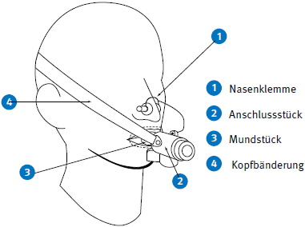
Abb. 14 Mundstückgarnitur
Halbmasken umschließen Mund, Nase und Kinn, Viertelmasken nur Mund und Nase. Die Dichtlinie verläuft über den Nasenrücken, die Wangen und bei Halbmasken unterhalb bzw. bei Viertelmasken oberhalb des Kinns. Halb- und Viertelmasken können Ein- und Ausatemventile besitzen. Sie können mit einem oder mehreren Anschlussstücken ausgestattet sein.
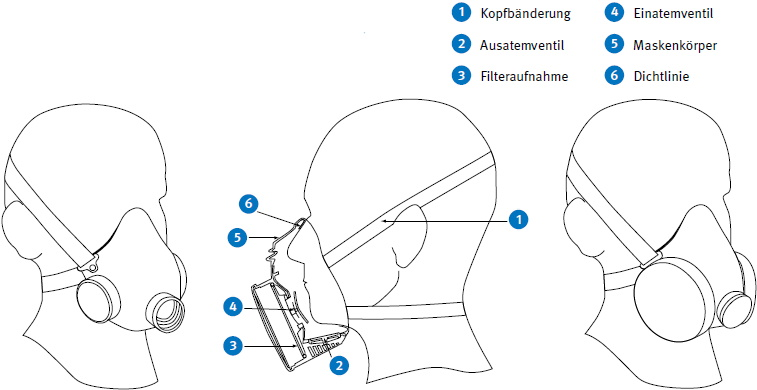
Abb. 15 Halbmaske mit Anschlussstück Abb. 16 Halbmaske mit Steckfilter Abb. 17 Halbmaske mit zwei Filtern
Vollmasken umschließen das ganze Gesicht und schützen damit auch die Augen. Die Dichtlinie verläuft über Stirn, Wangen und unterhalb des Kinns. Vollmasken sind meistens mit einer Innenmaske ausgestattet, die den Masken-Totraum reduziert und durch die Luftführung das Beschlagen der Sichtscheiben verhindert.
Vollmasken können mit einem oder mehreren Anschlussstücken ausgestattet sein. Vollmasken werden nach DIN EN 136 in drei Klassen eingeteilt, die das gleiche Schutzniveau bieten, jedoch hinsichtlich mechanischer Festigkeit, Beständigkeit gegen Einwirkung von Flammen und Wärmestrahlung deutliche Unterschiede aufweisen.
Klasseneinteilung:
Klasse 1: Vollmasken für leichte Einsätze
Klasse 2: Vollmasken für allgemeine Einsätze
Klasse 3: Vollmasken für spezielle Einsätze
An Vollmasken der Klasse 1 werden die geringsten Anforderungen bezüglich Zugfestigkeit des Geräteanschlussstückes, der Bänderung und des Ausatemventiles sowie der Flammenbeständigkeit gestellt. Ferner werden in dieser Klasse keine Anforderungen an die Beständigkeit gegen Wärmestrahlung gestellt.
Um in der betrieblichen Praxis gefährliche Kombinationen auszuschließen, dürfen Vollmasken der Klasse 1 nicht mit einem Anschlussgewinde nach DIN EN 148 Teil 1, 2 oder 3 ausgestattet sein.
Vollmasken der Klasse 2 und 3 müssen die gleichen erhöhten Anforderungen bezüglich mechanischer Festigkeit und Flammenbeständigkeit erfüllen.
Vollmasken der Klasse 3 müssen zusätzlich eine Widerstandsfähigkeit gegen Wärmestrahlung aufweisen. Sie kommen in erster Linie bei Feuerwehren sowie den Gruben- und Gasschutzwehren zum Einsatz.
Vollmasken der Klasse 3 können durch spezielle Haltevorrichtungen mit einem Feuerwehrhelm nach DIN EN 443 zu einer Masken-Helm-Kombination (MHK) verbunden sein. Bei einer MHK ersetzt der Helm die Kopfbänderung. Eine MHK muss der DIN 58610 entsprechen.
Vollmasken können mit einer optischen Sehhilfe, z. B. Maskenbrille, versehen werden. Brillen mit Bügeln sind für den Gebrauch mit einer Vollmaske ungeeignet, da die Bügel die Dichtlinie unterbrechen.
Einen Überblick über die Zuordnung der drei Klassen von Vollmasken zu den verschiedenen Atemschutzgeräten bzw. deren Funktionsteilen gibt Tabelle 25.
Tabelle 25 Zuordnung Vollmaskenklassen zu Atemschutzgeräten/Funktionsteilen
(ND = Normaldruck/ÜD = Überdruck
| DIN EN | Atemschutzgerät/Funktionsteil | DIN EN 136 Vollmaske | |||||
| Klasse 1 | Klasse 2 | Klasse 3 | |||||
| ND | ÜD | ND | ÜD | ND | ÜD | ||
| 137 | Behältergerät mit Druckluft | x | x | x | x | ||
| 138 | Frischluft-Schlauchgerät | x | x | ||||
| 145 | Regenerationsgerät | x | x | ||||
| 14593-1 | Druckluft-Schlauchgerät mit Lungenautomat | x | x | x | x | ||
| 14594 | Druckluft-Schlauchgerät mit kontinuierlichem Luftstrom Klasse A | x | x | x | |||
| 14594 | Druckluft-Schlauchgerät mit kontinuierlichem Luftstrom Klasse B | x | x | ||||
| 14387 | Gas- und Kombinationsfilter | x | x | x | |||
| 143 | Partikelfilter | x | x | x | |||
| DIN 58621 | Reaktorfilter | x | x | x | |||
| DIN 58620 | CO-Filter | x | x | x | |||
| 12083 | Filter mit Atemschlauch | x | x | x | |||
| 12942 | Filtergerät mit Gebläse | x | x | x | |||
| 13794 | Selbstretter | x | x | x | x | ||
| DIN 58610 | Masken-Helm-Kombination | x | x | ||||
Bei Vollmasken kann die Sprachverständlichkeit durch eine Sprechmembran verbessert werden. Sie muss gegen Beschädigung geschützt sein. Eine etwa vorhandene Abdeckung darf nicht entfernt werden.
Die Sprachübertragung aus der Vollmaske kann auch elektroakustisch oder funktechnisch erfolgen. Dafür ist gewöhnlich ein Mikrofon im Maskeninnern angebracht, während der Verstärker, die Batterien und der Lautsprecher oder Sender außen an der Maske angebracht sind, am Körper getragen werden oder sich weiter entfernt befinden. Der Einsatz in explosionsfähiger Atmosphäre kann dadurch eingeschränkt sein, sofern diese Bauteile eine Zündquelle darstellen können.
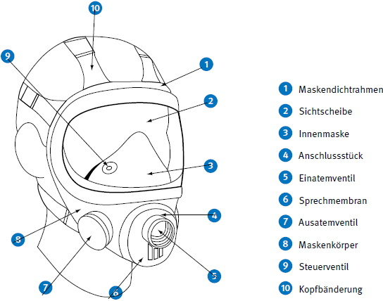
Abb. 18 Vollmaske
Atemschutzhauben und -helme umhüllen mindestens das Gesicht (Augen, Nase, Mund und Kinn), häufig aber den gesamten Kopf und den Hals. Sie benötigen zur sicheren Funktionsweise die Zufuhr eines Mindestvolumenstroms von Atemgas (gilt nicht für Filterfluchthauben). Das Ausatemgas strömt zusammen mit dem Luftüberschuss aus dem Atemanschluss an dafür vorgesehenen offenen Stellen ab, z. B. an der Halskrause. Bei Hauben mit integrierter Halbmaske oder Mundstückgarnitur bilden letztere den Atemanschluss.
Die Schutzwirkung von Atemschutzgeräten mit Hauben oder Helmen kann durch stärkere Umgebungsluftbewegungen beeinflusst werden. Solche Verhältnisse kommen z. B. bei Arbeiten im Freien, in Bereichen mit starker Thermik oder in Bereichen mit hohen Luftgeschwindigkeiten vor.
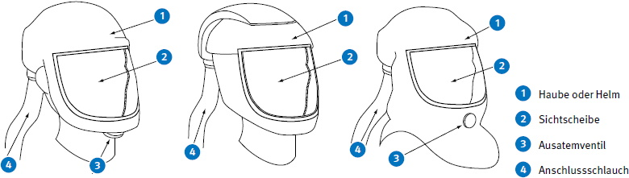
Abb. 19 Haube und Helm
Bei hohem Atemminutenvolumen oder sehr tiefen Atemzügen kann es zum Überatmen des Gerätes kommen. Das heißt, das bei der Einatmung benötigte Luftvolumen liegt über dem vom Atemschutzgerät zur Verfügung gestellten Luftvolumen.
Atemschutzhelme müssen zusätzlich die Anforderungen der DIN EN 397 für Industrieschutzhelme erfüllen.
Schweißerschutzhauben und Strahlerschutzhauben müssen zusätzlich Anforderungen an Gesichts- und Augenschutz (z. B. EN 166) erfüllen.
10.1.6.1 Allgemeine Funktion
Der Atemschutzanzug ist ein Atemanschluss, der Kopf und Körper vollständig oder teilweise umschließt und über eine Atemgasversorgung die atemschutzgerättragende Person direkt aus dem Schutzanzug mit Atemgas versorgt. Die Luftversorgung kann entweder über ein Filtergerät mit Gebläse oder über ein Druckluft-Schlauchgerät erfolgen (siehe auch Kapitel 10.2.4.6 und 10.3.2.3). Sollen Atemschutzanzüge weitere Anforderungen erfüllen, z. B. Schutz gegen Gase und Dämpfe, Flüssigkeiten, radioaktive Kontamination durch feste Partikel oder Infektionserreger, müssen zusätzliche Anforderungen aus den entsprechenden Normen erfüllt sein.
Die Luftführung beeinflusst die Hitzestressreduzierung im Atemschutzanzug. Dabei werden drei verschiedene Wirksysteme unterschieden:
Bei Ventilation nur im Kopfbereich streicht die Luft über den Kopf zu den Atemwegen und erzeugt dadurch eine geringe Hitzestressreduzierung. Eine Luftzirkulation zwischen Kopf- und Rumpfbereich ist in diesem Fall eingeschränkt.
Bei der Ventilation des gesamten Körpers ist eine Luftzirkulation zwischen Kopf- und Rumpfbereich möglich. Die Hitzestressreduzierung wird dadurch erhöht.
Bei der Ventilation des gesamten Körpers mittels zum Körper gerichteter Luftverteilung wird ein Teilluftstrom über ein Verteilsystem an den gesamten Körper geleitet. Der Grad der Hitzestressreduzierung ist bei dieser Bauform am höchsten.
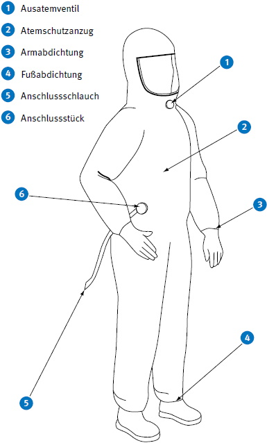
Abb. 20 Atemschutzanzug
10.1.6.2 Geschlossener Atemschutzanzug
Ein geschlossener Atemschutzanzug ist mit einer Vorrichtung zur Atemgasversorgung ausgestattet und umschließt den Körper vollständig. Die Atemgasversorgung erzeugt einen Überdruck im Inneren des Anzugs. Die ausgeatmete und überschüssige Luft tritt aus dem Anzug durch ein oder mehrere Ausatemventile in die Umgebungsluft aus.
Geschlossene Atemschutzanzüge schützen den ganzen Körper vor festen, flüssigen und/oder gasförmigen Schadstoffen.
Hierunter fallen z. B. Anzüge nach DIN EN 1073-1 oder DIN EN 943-1 Typ 1c.
10.1.6.3 Offener Atemschutzanzug
Ein offener Atemschutzanzug ist mit einer Vorrichtung zur Atemgasversorgung ausgestattet, und bedeckt den Kopf und den Körper der atemschutzgerättragenden Person. Füße und/oder Hände müssen nicht umschlossen sein. Die ausgeatmete und überschüssige Luft kann aus dem Anzug durch ein oder mehrere Ausatemventile oder z. B. durch Öffnungen an den Armen und Beinen in die Umgebungsluft austreten.
Offene Atemschutzanzüge schützen die bedeckten Körperteile vor festen und/oder flüssigen Schadstoffen.
Hierunter fallen z. B. Anzüge mit Anschluss für Druckluftzuführung nach DIN EN 14594.
10.1.6.4 Chemikalienschutzanzug in Verbindung mit einem Atemschutzgerät
Dieser Chemikalienschutzanzug stellt keinen Atemanschluss dar und muss immer in Verbindung mit einem Atemschutzgerät gebraucht werden. Das Atemschutzgerät kann entweder außerhalb oder innerhalb des Chemikalienschutzanzuges getragen und gebraucht werden. Diese Chemikalienschutzanzüge haben keine erzwungene Ventilation im Innern, dadurch wird der Wärmeaustausch verhindert.
Hierunter fallen z. B. Anzüge nach DIN EN 943-1 Typ 1a bzw. Typ 1b.
Filtergeräte setzen sich aus dem Atemanschluss und dem Funktionsteil "Filtereinheit" zusammen. Die Filtereinheit kann aus einem oder mehreren Filtern mit oder ohne Zubehör, z. B. Gebläse, bestehen.
Filtrierende Halbmasken sind eine Bauart, bei der Atemanschluss und Funktionsteil eine untrennbare Einheit bilden. Sie können mit einem Ausatemventil ausgestattet sein, welches vorrangig zur Verringerung des Ausatemwiderstandes dient. Diese sind bevorzugt zu benutzen, da die atemschutzgerättragenden Personen dadurch geringer beansprucht werden.
Das Schutzziel, die atemschutzgerättragende Person mit Atemluft zu versorgen, wird bei Filtergeräten durch Entfernen der Schadstoffe mittels Gas-, Partikel- oder Kombinationsfilter erreicht. Filtergeräte können je nach Filterart bestimmte Schadstoffe in den Grenzen ihres Abscheide- bzw. Aufnahmevermögens aus der Umgebungsatmosphäre entfernen. Im Zweifelsfall können Auskünfte über den einzusetzenden Filtertyp bei der Herstellerfirma eingeholt werden.
Filtergeräte schützen nicht bei Sauerstoffmangel.
Die Benutzung von Filtergeräten setzt voraus, dass die Umgebungsatmosphäre mindestens 17 Vol.-% Sauerstoff enthält. Für den Einsatz von Filtern gegen Kohlenstoffmonoxid (CO-Filter) und für spezielle Bereiche sind mindestens 19 Vol.-% Sauerstoff erforderlich. Je nach Schadstoffart in der Umgebungsatmosphäre müssen entsprechende Filtergeräte gemäß Tabelle 26 benutzt werden.
Tabelle 26 Zuordnung der Filtergeräte
| Schadstoffart | Filtergerät |
| Partikel (feste und flüssige Aerosole) | Partikelfilter |
| Gase und Dämpfe | Gasfilter |
| Partikel, Gase und Dämpfe | Kombinationsfilter |
Ein Gasfilter schützt nicht gegen Partikel, ein Partikelfilter nicht gegen Gase.
Bei Tätigkeiten mit luftgetragenen biologischen Arbeitsstoffen und Enzymen ist es in der Regel nicht möglich, die gesundheitliche Relevanz definierter Keimkonzentrationen zu bewerten. Für Filtergeräte ist deshalb die Schutzwirkung, bezogen auf eine bestimmte Keimkonzentration in der Umgebungsluft, nicht bestimmbar. Es kann jedoch eine signifikante Verringerung der Keim- oder Enzymkonzentration in der Einatemluft erreicht werden.
Sind festgelegte Werte benannt, z. B. Arbeitsplatzgrenzwerte oder Beurteilungsmaßstäbe, die zu einer Sensibilisierung beim Menschen führen können, bestimmen diese die Anforderungen an das einzusetzende Filtergerät.
Filtergeräte dürfen nicht benutzt werden, wenn unbekannte Umgebungsverhältnisse vorliegen, oder wenn sich die Zusammensetzung der Umgebungsatmosphäre nachteilig verändern kann. Bestehen Zweifel, ob Filtergeräte ausreichenden Schutz bieten, z. B. über Höhe der Schadstoffkonzentration, Filterkapazität, unzulässige Temperaturerhöhung des Filters oder Bildung unerwünschter Reaktionsprodukte im Filter, sind Isoliergeräte zu benutzen.
10.2.2.1 Partikelfilter
Partikelfilter werden entsprechend ihrem Abscheidevermögen für Partikel in die folgenden Partikelfilterklassen eingeteilt:
Die Wiedergebrauchbarkeit ist durch die Kennbuchstaben "NR" ("non-reusable") und "R" ("reusable") geregelt:
Partikelfilter sind nach DIN EN 143 durch den Kennbuchstaben P, die Partikelfilterklasse, den Kennbuchstaben bezüglich der Wiedergebrauchbarkeit und die Kennfarbe Weiß gekennzeichnet.
Z. B.: EN 143:2000 P2 R oder EN 143:2000 P1 NR
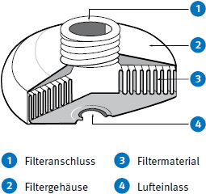
Abb. 21 Partikelfilter
10.2.2.2 Gasfilter
10.2.2.2.1 Allgemeines
Gasfilter werden je nach Art des Gases/Dampfes in die Gasfiltertypen A, B, E, K, AX, SX, CO (siehe Tabelle 8) sowie entsprechend ihrem Aufnahmevermögen (Gaskapazität) in drei Gasfilterklassen eingeteilt:
Im Gegensatz zu den Partikelfilterklassen geben die höheren Gasfilterklassen keinen höheren Schutz als die niedrigeren Klassen im Sinne eines "niedrigeren Durchlassgrades". Unter sonst gleichen Einsatzbedingungen ist wegen der höheren Gaskapazität der höheren Gasfilterklasse die mögliche Gebrauchsdauer länger als die der niedrigeren Gasfilterklasse.
Die Gasfilter werden durch Kennbuchstaben und Kennfarben des Gasfiltertyps sowie Angabe der Gasfilterklassen durch Kennziffern nach DIN EN 14387, DIN 58620 und DIN 58621 bezeichnet:
Gasfilter, die verschiedene der in Tabelle 8 aufgeführten Gasfiltertypen enthalten, werden Mehrbereichsfilter genannt. Mehrbereichsfilter müssen die Anforderungen für jeden Gasfiltertyp der angegebenen Gasfilterklassen einzeln erfüllen. Sie werden gekennzeichnet, z. B. mit
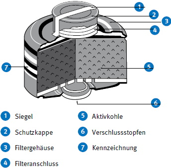
Abb. 22 Gasfilter
10.2.2.2.2 AX-Filter
AX-Filter nach DIN EN 14387 werden zum Schutz vor Niedrigsiedern (Siedepunkt < 65 °C) gebraucht und mit der Kennfarbe braun gekennzeichnet.
Die aufgezählten Stoffe sind Beispiele für Niedrigsieder, gegen die ein Schutz durch AX-Filter erreichbar ist. Die Aufzählung ist nicht abschließend und erhebt keinen Anspruch auf Vollständigkeit.
AX-Filter zeichnen sich dadurch aus, dass sie eine große adsorptive Kapazität für organische Verbindungen anbieten. Typischerweise werden die Gefahrstoffe im Filter nicht dauerhaft gebunden. Sie werden an der Oberfläche der Aktivkohlen adsorbiert und lösen sich wieder ab. Durch dieses Wechselspiel wandern die Gefahrstoffe langsam durch das Filter, bis sie auf der Einatemseite wieder austreten. Die Geschwindigkeit, mit der dies geschieht, ist abhängig von Art und Konzentration des Schadstoffes, der Durchflussrate (Atemvolumenstrom) und der Temperatur.
Beispielsweise muss ein Filter nach DIN EN 14387 bei einem Atemvolumenstrom von 30 l/min und einer Temperatur von 23 °C mindestens 50 Minuten vor 0,25 Vol.-% Isobutan in der Atemluft schützen.
Die Kapazität eines AX-Filters für einen bestimmten Stoff ist von der Aktivkohle, die von der Herstellerfirma eingesetzt wurde, sowie den spezifischen Einsatzbedingungen abhängig. Sie ist nicht für alle erhältlichen Filter vom Typ AX identisch und muss individuell ermittelt werden.
Liegen Stoffgemische vor, so darf nicht die Kapazität für die Einzelstoffe herangezogen werden, sondern es muss das Stoffgemisch im Ganzen beurteilt werden.
Optional können gegen Niedrigsieder auch andere Filtertypen, beispielsweise A2B2E2K1, eingesetzt werden, wenn diese auch von der Herstellerfirma als für diesen Schadstoff geeignet beschrieben werden.
Ungebrauchte AX-Filter können auch als A2-Filter eingesetzt werden. Dabei ist darauf zu achten, dass in diesem Fall keine Niedrigsieder vorhanden sind. Nach Gebrauch als A2-Filter darf der Filter nicht mehr als AX-Filter eingesetzt werden.
Der Gebrauch von Gasfiltern des Typs A gegen Niedrigsieder ist grundsätzlich unzulässig. Das gilt auch, wenn diese mit anderen Gasfiltertypen in Mehrbereichsfiltern kombiniert sind, beispielsweise A2E2K1.
Es dürfen nur AX-Filter im Anlieferungszustand (fabrikfrisch) gebraucht werden. Innerhalb einer Arbeitsschicht ist der Mehrfachgebrauch im Rahmen der jeweiligen Einsatzgrenze zulässig. Ein Wiedergebrauch darüber hinaus ist grundsätzlich unzulässig. In Ausnahmefällen können jedoch in Absprache mit der Herstellerfirma spezifische Einsatzregeln aufgestellt werden.
10.2.2.2.3 SX-Filter
SX-Filter nach DIN EN 14387 dürfen nur gegen Gase eingesetzt werden, mit deren Namen sie gekennzeichnet sind und werden mit der Kennfarbe violett gekennzeichnet.
Zum Einsatz gegen Gase oder Dämpfe einer organischen Verbindung mit dem Siedepunkt ≤ 65 °C dürfen nur fabrikmäßig versiegelte SX-Filter eingesetzt werden, die unmittelbar vor dem Gebrauch zu entsiegeln sind.
SX-Filter sind im Rahmen betriebsspezifischer Einsatzregeln wiedergebrauchbar, wenn sie bis zum Wiedergebrauch gasdicht verschlossen aufbewahrt werden. Abweichend davon dürfen SX-Filter gegen organische Niedrigsieder nicht wiedergebraucht werden.
10.2.2.2.4 CO-Filter
CO-Filter nach DIN 58620 werden gegen Kohlenstoffmonoxid (CO) eingesetzt und sind mit der Kennfarbe schwarz gekennzeichnet.
Sie werden nach ihrer nominellen Haltezeit (Minuten) in die Klassen 20, 60 und 180 eingeteilt und können einmal geöffnet, mehrfach, aber nur noch in dieser einen Arbeitsschicht gebraucht werden. Filter der Klasse 60 und 180, die mit "W" gekennzeichnet sind, können, einmal geöffnet, mehrfach innerhalb einer Woche (7 Tage) gebraucht werden.
CO-Filter sind z. B. wie folgt gekennzeichnet:
CO-Filter können in der Ausführung als Mehrbereichsfilter, mit zusätzlicher Gasfilterleistung nach DIN EN 14387 oder als Kombinationsfilter vorliegen.
Diese Filter sind z. B. wie folgt gekennzeichnet:
Die CO-Filterleistung ist nur bis zur nominellen Haltezeit gegeben, auch wenn während des Einsatzes kein CO in der Atmosphäre vorlag.
10.2.2.3 Kombinationsfilter
10.2.2.3.1 Allgemeines
Für den Einsatz von Kombinationsfiltern gelten sowohl die Anforderungen an Gas- als auch die an Partikelfilter. Für den Partikelfilterteil ist die Klasseneinteilung "NR" und "R" zu beachten (siehe Kapitel 10.2.2.1)
Diese Filter sind z. B. wie folgt gekennzeichnet:
Dies gilt analog für filtrierende Halbmasken:
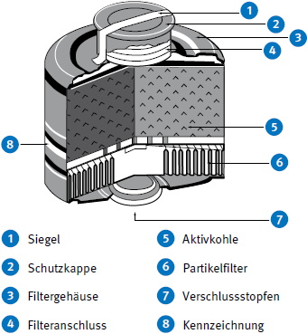
Abb. 23 Kombinationsfilter
10.2.2.3.2 Reaktorfilter
Reaktorfilter sind spezielle Kombinationsfilter und bieten Schutz gegen radioaktives Methyliodid und radioaktive Partikel. Sie werden in Kernkraftwerken, Isotopenlaboren u. ä. Einrichtungen eingesetzt. Reaktorfilter nach DIN 58621 werden mit der Kennfarbe orange/weiß gekennzeichnet und wie folgt bezeichnet:
Reaktorfilter können in der Ausführung als Mehrbereichsfilter mit zusätzlicher Gasfilterleistung nach DIN EN 14387 vorliegen. In diesem Fall ist ihre Kennzeichnung zweizeilig, z. B.:
Es dürfen nur Reaktorfilter im Anlieferungszustand (fabrikfrisch) gebraucht werden. Der wiederholte Gebrauch bei Einsatz in radioaktiver Kontamination ist nicht zulässig.
10.2.2.3.3 NO-P3-Filter
NO-P3-Filter sind spezielle Kombinationsfilter für den Einsatz gegen nitrose Gase.
NO-P3-Filter nach DIN EN 14387 werden mit der Kennfarbe blau/weiß gekennzeichnet und wie folgt bezeichnet:
Sie sind für den Mehrfachgebrauch innerhalb einer Arbeitsschicht bis zur Einsatzgrenze ausgelegt und zum Wiedergebrauch nicht geeignet. Für Ausnahmefälle können jedoch in Absprache mit der Herstellerfirma spezifische Einsatzregeln aufgestellt werden.
Beim Gebrauch gegen nitrose Gase dürfen nur fabrikfrische Filter benutzt werden!
10.2.2.3.4 Hg-P3-Filter
Hg-P3-Filter sind spezielle Kombinationsfilter für den Einsatz gegen Quecksilber.
Hg-P3-Filter nach DIN EN 14387 werden mit der Kennfarbe rot/weiß gekennzeichnet und wie folgt bezeichnet:
Beim Gebrauch von Filtern gegen Quecksilber beträgt die Gebrauchsdauer maximal 50 Stunden. Innerhalb dieses Zeitraums ist ein Wiedergebrauch möglich.
10.2.3.1 Filtrierende Halbmasken
10.2.3.1.1 Partikelfiltrierende Halbmasken
Partikelfiltrierende Halbmasken werden entsprechend ihrem Abscheidevermögen für Partikel in die folgenden Partikelfilterklassen eingeteilt:
Die partikelfiltrierende Halbmaske ist ein vollständiges Atemschutzgerät, das ganz oder überwiegend aus nicht auswechselbarem Filtermaterial besteht. Sie schützt gegen feste und flüssige Aerosole, die nicht aus leicht flüchtigen Partikeln bestehen. Das dem Maskentyp in Verbindung mit der jeweiligen Partikelfilterklasse zugeordnete Schutzniveau ist in Tabelle 2 angegeben.
Die Einsatzgebiete und Einsatzgrenzen der partikelfiltrierenden Halbmasken sind die gleichen, wie für Halbmasken/Viertelmasken mit der entsprechenden Partikelfilterklasse.
Werden die Geräte bei hohen Staubkonzentrationen, insbesondere mit hohen Feinstaubanteilen (A-Staub), benutzt, sollten Geräte mit der Kennzeichnung "D" bevorzugt werden, da deren Atemwiderstand durch Staubeinspeicherung nicht so schnell ansteigt.
Partikelfiltrierende Halbmasken der Klasse FFP1 dürfen nicht gegen CMR-Stoffe, radioaktive Stoffe sowie luftgetragene biologische Arbeitsstoffe mit der Einstufung in Risikogruppe 2 und 3 und Enzyme eingesetzt werden.
Für luftgetragene biologische Arbeitsstoffe, die in Risikogruppe 2 eingestuft sind, muss mindestens eine partikelfiltrierende Halbmaske der Klasse FFP2 benutzt werden.
Partikelfiltrierende Halbmasken der Klasse FFP3 dürfen gegen CMR-Stoffe, radioaktive Stoffe und luftgetragene biologische Arbeitsstoffe mit der Einstufung in Risikogruppe 3 und Enzyme eingesetzt werden. In Ausnahmefällen dürfen auch partikelfiltrierende Halbmasken der Klasse FFP2 gegen diese Stoffe eingesetzt werden, sofern dazu stoff- oder einsatzspezifische Regelungen bestehen.
Partikelfiltrierende Halbmasken sollten bei deutlich spürbarem ansteigendem Atemwiderstand oder spätestens nach einer Arbeitsschicht ausgetauscht werden. Beim Umgang mit luftgetragenen biologischen Arbeitsstoffen sind diese Atemschutzgeräte in die erforderlichen Hygienemaßnahmen einzubeziehen.
Da eine Desinfektion und Dekontamination für solche Geräte nicht vorgesehen ist, sollten diese beim Verlassen des Arbeitsplatzes entsorgt werden.
Partikelfiltrierende Halbmasken werden beispielsweise wie folgt bezeichnet:
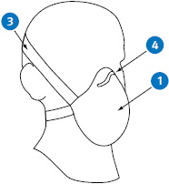
Abb. 24 Partikelfiltrierende Halbmaske ohne Ausatemventil
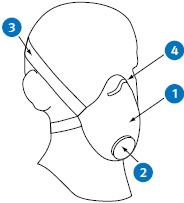
Abb. 25 Partikelfiltrierende Halbmaske mit Ausatemventil
10.2.3.1.2 Gasfiltrierende Halbmasken
Die gasfiltrierende Halbmaske ist ein vollständiges Atemschutzgerät, das ganz oder überwiegend aus nicht auswechselbarem Filtermaterial besteht oder bei dem das Gasfilter einen untrennbaren Teil des Gerätes darstellt. Sie schützt gegen Gase und Dämpfe. Die Einteilung erfolgt nach DIN EN 405 in die Typen FFA, FFB, FFE, FFK, FFAX, FFSX entsprechend dem Haupteinsatzbereich, wie in Tabelle 8 für die Gasfilter A, B, E, K, AX, SX aufgeführt und entsprechend dem Gasaufnahmevermögen in die Klassen 1 und 2 für die Typen FFA, FFB, FFE und FFK analog Tabelle 8. Gasfiltrierende Halbmasken werden wie folgt bezeichnet:
z. B. DIN EN 405:2009 FFA1
Bei gasfiltrierenden Halbmasken ist eine Farbkennzeichnung des Maskenkörpers nicht vorgesehen. Daher hat die Farbgebung in der Regel keinen Bezug zum Einsatzbereich.
Das diesem Maskentyp zugeordnete Schutzniveau ist in Tabelle 2 angegeben.
Die Einsatzgebiete und Einsatzgrenzen der gasfiltrierenden Halbmasken sind die gleichen, wie für Halbmasken/Viertelmasken mit den entsprechenden Gasfiltertypen und -klassen.
10.2.3.1.3 Partikel- und gasfiltrierende Halbmasken
Die partikel- und gasfiltrierende Halbmaske ist ein vollständiges Atemschutzgerät, das ganz oder überwiegend aus nicht auswechselbarem Filtermaterial besteht oder bei dem das Gasfilter einen untrennbaren Teil des Gerätes darstellt. Im Regelfall handelt es sich bei partikel- und gasfiltrierenden Halbmasken um gasfiltrierende Halbmasken, die optional durch austauschbare Partikelfilter erweiterbar sind.
Sie schützt gegen Partikel, Gase und Dämpfe. Die Einteilung erfolgt nach DIN EN 405 in die Typen FFA, FFB, FFE, FFK, FFAX, FFSX entsprechend dem Haupteinsatzbereich, wie in Tabelle 8 für die Gasfilter A, B, E, K, AX, SX aufgeführt und entsprechend dem Gasaufnahmevermögen in die Klassen 1 und 2 für die Typen FFA, FFB, FFE und FFK analog Tabelle 8 sowie nach DIN EN 149 durch den Kennbuchstaben P, die Partikelfilterklasse und den Kennbuchstaben bezüglich der Wiedergebrauchbarkeit.
Partikel- und gasfiltrierende Halbmasken werden beispielsweise wie folgt bezeichnet:
Bei partikel- und gasfiltrierenden Halbmasken ist eine Farbkennzeichnung des Maskenkörpers nicht vorgesehen. Daher hat die Farbgebung in der Regel keinen Bezug zum Einsatzbereich.
Bei der Auswahl sind Gas- und Partikelfilterteil getrennt zu betrachten. Es gelten die jeweiligen Schutzniveaus des Gas- und Partikelfilterteils (siehe Tabelle 2).
Die Einsatzgebiete und Einsatzgrenzen der partikel- und gasfiltrierenden Halbmasken sind die gleichen, wie für Halbmasken/Viertelmasken mit den entsprechenden Filtertypen und -klassen.
10.2.3.2 Atemanschlüsse mit Filter
Voll-, Halb- und Viertelmasken können mit einem oder mehreren Filtern ausgestattet werden. Das dem Maskentyp – ggf. in Verbindung mit der jeweiligen Partikelfilterklasse – zugeordnete Schutzniveau ist in Tabelle 2 angegeben. Für den Einsatz von Kombinationsfiltern gelten sowohl die Anforderungen an Gas- als auch die an Partikelfilter.
Sollen Mundstückgarnituren mit einem Filter verbunden werden, der mehr als 300 g wiegt, darf dieser nicht unmittelbar angeschlossen werden, sondern muss über einen Schlauch gewichtsentlastet mit dem Atemanschluss verbunden werden.
Sollen Halb- oder Viertelmasken mit einem Filter oder mehreren Filtern verbunden werden, die insgesamt mehr als 300 g wiegen, dürfen diese nicht unmittelbar angeschlossen werden, sondern müssen über einen Schlauch gewichtsentlastet mit dem Atemanschluss verbunden werden.
Sollen Vollmasken der Klassen 2 und 3 mit einem Filter oder mehreren Filtern verbunden werden, die insgesamt mehr als 500 g wiegen, dürfen diese nicht unmittelbar angeschlossen werden, sondern müssen über einen Schlauch gewichtsentlastet mit dem Atemanschluss verbunden werden. Mit Vollmasken der Klasse 1 dürfen nur die von der Herstellerfirma vorgesehenen Filter eingesetzt werden.
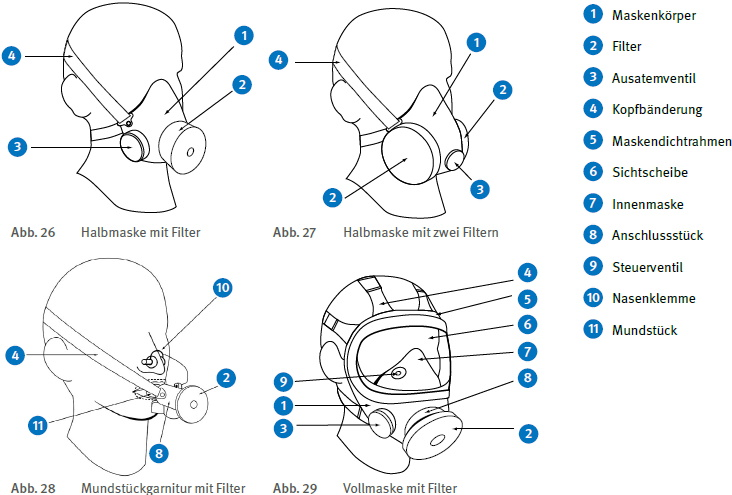
10.2.4.1 Allgemeines
Filtergeräte mit Gebläse sind von der Umgebungsatmosphäre abhängig wirkende Atemschutzgeräte. Sie werden entsprechend dem Einsatzzweck und dem Atemanschluss in folgende Hauptgruppen unterteilt:
Filtergeräte mit Gebläse bestehen aus einem Atemanschluss und einem batteriebetriebenen Gebläse, das gefilterte Luft zum Atemanschluss fördert. Das Gebläse ist entweder direkt oder über einen Atemschlauch mit dem Atemanschluss verbunden. Ausatemluft und überschüssige Luft strömen durch Ausatemventile oder andere Vorrichtungen ab. Die Energieversorgung des Gebläses kann von der atemschutzgerättragenden Person mitgeführt werden (Batterie) oder auf andere Weise erfolgen, z. B. auf einem Fahrzeug durch die Fahrzeugbatterie.
Das Gerät kann mit einem oder mehreren Partikel-, Gas- oder Kombinationsfilter/n ausgestattet sein.
Folgende Informationen sind der Informationsbroschüre der Herstellerfirma zu entnehmen:
In Verbindung mit einem Gebläsefiltergerät dürfen nur die für dieses Gerät speziell zugelassenen Filter eingesetzt werden, da z. B. die Strömungswiderstände der Filter mit der Gebläseleistung abgestimmt sind.
Die in der Tabelle 2 genannten Schutzniveaus gelten nur bei bestimmungsgemäß funktionierendem Gerät (Gebläse eingeschaltet) für die in der Informationsbroschüre der Herstellerfirma vorgegebenen Kombinationen von Atemanschluss, Gebläse und Filtertyp einschließlich der vorgegebenen Anzahl von gleichzeitig einzusetzenden Filtern.
Filtergeräte mit Gebläse besitzen im Allgemeinen einen geringen Einatemwiderstand und weisen bei normalen wie auch erhöhten Umgebungslufttemperaturen ein besonders günstiges Mikroklima im Atemanschluss auf. Beeinträchtigungen der atemschutzgerättragenden Person durch Zugluft (z. B. Reizung der Augen und Schleimhäute) können nicht immer ausgeschlossen werden.
10.2.4.2 Bezeichnung und Schutzklasse
Gebläsefiltergeräte werden nach ihrer Schutzklasse in jeweils drei Klassen eingeteilt. Die Schutzklasse ist durch die in den europäischen Normen festgelegte Gesamtleckage des Gerätes gegeben. Zur Gesamtleckage tragen Atemanschluss und Partikelfilter oder Kombinationsfilter bei. Gasfilter besitzen nach Definition keine Leckage.
In der Bezeichnung für Gebläsefiltergeräte steht T für "Turbo", eine europaweit verständliche Kurzbezeichnung für Gebläse, M für "Maske" und H für "Haube" oder "Helm". Dementsprechend werden Gebläsefiltergeräte mit Helm oder Haube entsprechend ihrer Schutzklasse mit TH1, TH2 oder TH3 in Verbindung mit den jeweiligen Filterbezeichnungen bezeichnet. Gebläsefiltergeräte mit Voll-, Halb- oder Viertelmaske werden entsprechend ihrer Schutzklasse mit TM1, TM2 oder TM3 in Verbindung mit den jeweiligen Filterbezeichnungen bezeichnet.
Die Zahl für die Schutzklasse eines Gebläsefiltergerätes, z. B. TM2P, entspricht nicht der Partikelfilterklasse, z. B. P2. Maßgebend für das Schutzniveau ist vielmehr die für das Gebläsefiltergerät in der Norm festgelegte Gesamtleckage.
Schutzniveau eines Gebläsefiltergerätes der Klasse TM2P: 100
Schutzniveau einer Vollmaske mit P2-Filter: 15
10.2.4.3 Kombinierbarkeit von Baugruppen
Es dürfen nur die von der Herstellerfirma angegebenen Baugruppen zu einem kompletten Atemschutzgerät kombiniert werden. Insbesondere dürfen nur die von der Herstellerfirma angegebenen Filterfabrikate eingesetzt werden.
Die möglichen Kombinationen der Baugruppen von Gebläsefiltergeräten und die damit erreichbare Schutzleistung werden in der Informationsbroschüre der Herstellerfirma genannt.
10.2.4.4 Filtergeräte mit Gebläse und Masken
Diese Geräte besitzen eine Vollmaske, Halbmaske oder Viertelmaske als Atemanschluss. Ausatemluft und überschüssige Luft strömen durch Ausatemventile in die Umgebungsatmosphäre ab.
Ein Nachlassen der Gebläseleistung wie auch eine hohe Staubeinspeicherung macht sich bei Geräten mit Masken ohne Warneinrichtung durch ansteigenden Einatemwiderstand bemerkbar. Bei Geräten mit Warneinrichtung wird das Unterschreiten des Mindestvolumenstromes z. B. akustisch signalisiert.
Gebläsefiltergeräte mit Maske bieten auch bei Ausfall des Gebläses noch einen gewissen Schutz, der jedoch gegenüber dem Gebläsebetrieb reduziert ist.
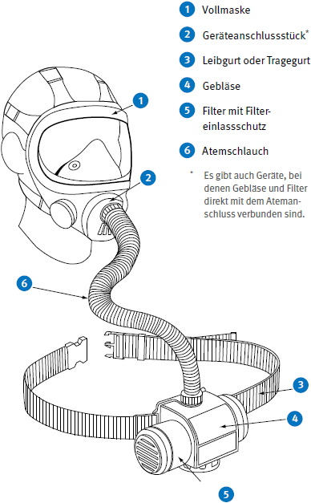
Abb. 30 Filtergerät mit Gebläse und Vollmaske
10.2.4.5 Filtergeräte mit Gebläse und Helm oder Haube
Diese Geräte weisen als Atemanschluss einen Helm oder eine Haube auf. Der Atemanschluss darf nur dann als Helm bezeichnet werden, wenn er über die Anforderungen als Atemschutzgerät hinaus auch die sicherheitstechnischen Anforderungen an Industrieschutzhelme (DIN EN 397) erfüllt.
Filtergeräte mit Gebläse und Helm oder Haube bieten bei deutlich reduzierter Gebläseleistung oder Ausfall des Gebläses keinen Schutz mehr. Ein Nachlassen der Gebläseleistung ist bei Geräten mit Helm oder Haube ohne eine Warneinrichtung im Allgemeinen nicht wahrnehmbar. Für die Geräte der Geräteklassen TH3 und TH2 ist deshalb eine Warneinrichtung vorgeschrieben.
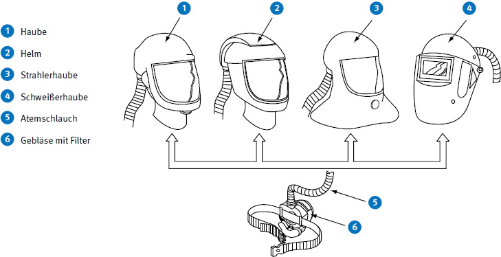
Abb. 31 Filtergeräte mit Gebläse und Haube oder Helm und Filter
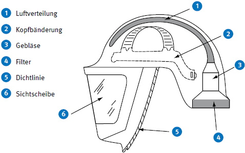
Abb. 32 Gebläsefiltergerät mit Helm
10.2.4.6 Filtergeräte mit Gebläse und Atemschutzanzug
Bei dieser Geräteart wird der Atemschutzanzug durch ein Filtergerät mit Gebläse mit Atemluft versorgt. Er stellt somit den Atemanschluss dar. Das Filtergerät mit Gebläse erzeugt einen Überdruck im Innern des Anzuges. Ein hoher Gebläsevolumenstrom mit optimierter Luftführung kann den Wärmestau im Anzug reduzieren - siehe auch Erläuterungen in Kapitel 10.1.6.
Die Geräte werden nach ihrer Atemschutzleistung, wie Filtergeräte mit Gebläse und Helm oder Haube in die drei Geräteklassen TH1, TH2 und TH3 eingeteilt.
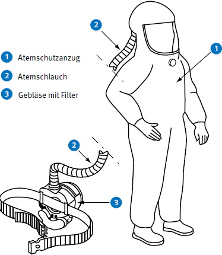
Abb. 33 Filtergerät mit Gebläse und Atemschutzanzug
Isoliergeräte wirken unabhängig von der Umgebungsatmosphäre und bieten Schutz gegen Sauerstoffmangel und schadstoffhaltige Atmosphäre. Sie liefern Atemgas, das aus Luft, Sauerstoff oder deren Mischungen bestehen kann.
Isoliergeräte werden in folgende Haupttypen unterteilt:
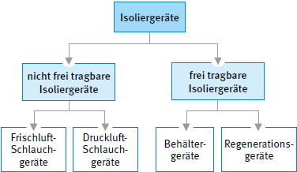
Abb. 34 Einteilung der Isoliergeräte
10.3.2.1 Allgemeines
Nicht frei tragbare Isoliergeräte werden unterschieden in:
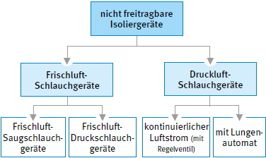
Abb. 35 Einteilung der nicht frei tragbaren Isoliergeräte
Sie bestehen aus einem Atemanschluss, einem Tragesystem, einem Schlauch zur Atemgasversorgung und einer Atemgasquelle. Mögliche Atemgasquellen sind:
Sind Schlauchgeräte für den Einsatz an Arbeitsstellen vorgesehen, bei denen An- und Abmarsch durch gefährliche, schadstoffhaltige Atmosphäre ohne Anschluss an die Atemgasquelle erfolgt, so muss ein zusätzliches geeignetes Atemschutzgerät benutzt werden.
Für besondere Einsatzbedingungen können Schläuche z. B. hitzebeständig, chemikalienbeständig oder mit definiertem elektrischen Oberflächenwiderstand ausgeführt sein.
Wegen der begrenzten Schlauchlänge sind die Geräte ortsabhängig.
10.3.2.2 Frischluft-Schlauchgeräte
10.3.2.2.1 Allgemeines
Frischluft-Schlauchgeräte werden in DIN EN 138 und DIN EN 269 beschrieben.
Entsprechend der mechanischen Belastbarkeit des Atemanschlusses, der Tragevorrichtung sowie der Schläuche und ihrer Verbindungen werden die Geräte in zwei Klassen eingeteilt:
Die Geräte beider Klassen bieten das gleiche Schutzniveau.
Bei Frischluft-Schlauchgeräten ist bei der Wahl der Ansaugstelle besonders auf Windrichtung und Gasschichtenbildung zu achten. Es ist sicher zu stellen, dass es während des Gebrauchs nicht zu einer Ansammlung von Schadstoffen an der Ansaugstelle kommen kann. Wenn z. B. mit Schadstoffen zu rechnen ist, die schwerer als Luft sind, darf sich die Ansaugstelle nicht in Bodennähe befinden. Das Ende des Zuführungsschlauches muss sicher befestigt werden, damit es nicht in schadstoffhaltige Atmosphäre hineingezogen werden kann. Der Schlauch muss am Ansaugende mit einem Schutzsieb versehen sein, um das Eindringen von Fremdkörpern zu verhindern.
Die Ausatemluft strömt in die Umgebungsatmosphäre.
10.3.2.2.2 Frischluft-Saugschlauchgeräte
Frischluft-Saugschlauchgeräte nach DIN EN 138 benötigten als Atemanschluss immer eine Vollmaske oder eine Mundstückgarnitur und sind immer Geräte der Klasse 2.
Die erforderliche Atemluft wird mittels Lungenkraft der atemschutzgerättragenden Person angesaugt.
Dadurch entsteht im gesamten System Unterdruck, in das an möglichen undichten Stellen Schadstoffe eintreten können. Schlauchkupplungen sind besonders leckageanfällig. Daher darf der Frischluft-Zuführungsschlauch nicht aus mehreren Schläuchen zusammengesetzt sein.
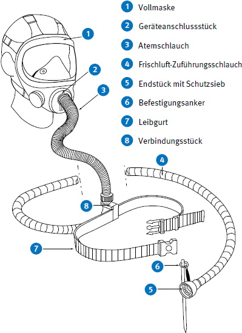
Abb. 36 Frischluft-Saugschlauchgerät
Länge und Innendurchmesser des Frischluft-Zuführungsschlauches werden durch den höchstzulässigen Einatemwiderstand des Gerätes bestimmt. Bei einem Innendurchmesser von ca. 25 mm sind Schlauchlängen von 10 bis 20 m erreichbar.
10.3.2.2.3 Frischluft-Druckschlauchgeräte
10.3.2.2.3.1 Allgemeines
Frischluft-Druckschlauchgeräte nach DIN EN 138 können mit Voll-, Halbmaske oder Mundstückgarnitur eingesetzt werden. Frischluft-Druckschlauchgeräte nach DIN EN 269 können mit Atemschutzhaube oder -helm benutzt werden.
Bei Frischluft-Druckschlauchgeräten wird die Atemluft der atemschutzgerättragenden Person unter leichtem Überdruck zugeführt. Sowohl im Frischluft-Zuführungsschlauch als auch überwiegend im nachgeschalteten Gerätesystem herrscht ein ständiger geringer Überdruck. Dadurch können Schadstoffe an möglichen undichten Stellen nicht sofort in das System gelangen. Der Frischluftzuführungsschlauch kann sich aus mehreren Einzelschläuchen zusammensetzen, die durch Kupplungen verbunden sind.
10.3.2.2.3.2 Geräte mit Voll- oder Halbmaske oder Mundstückgarnitur
Bei Frischluft-Druckschlauchgeräten mit Voll- oder Halbmaske oder Mundstückgarnitur entweicht die Ausatemluft durch das Ausatemventil des Atemanschlusses. Eventuell vorhandene Überschussluft kann sowohl durch das Ausatemventil des Atemanschlusses als auch durch das in jedem Fall notwendige Überschussventil im Atemschlauch entweichen.
Das Gerät kann mit einem Atembeutel ausgestattet sein, der als Ausgleichsbehälter und zur Deckung des Spitzenbedarfs dient.
Frischluft-Druckschlauchgeräte mit Regelventil ohne Atembeutel müssen entsprechend dem jeweiligen Atemluftverbrauch nachgeregelt werden können. Sofern der geforderte Mindestvolumenstrom bauartbedingt sichergestellt ist, kann auf einen Luftmengenmesser verzichtet werden.
Bei Geräten ohne Atembeutel ist das Regelventil – sofern vorhanden – so ausgelegt, dass es in geschlossener Stellung einen Volumenstrom von mindestens 120 l/min und in offener Stellung einen Volumenstrom von mindestens 300 l/min liefert.
Die Abmessungen des Frischluft-Zuführungsschlauches (Innendurchmesser und Länge) sowie die Lieferleistung der dazugehörigen Atemluftversorgung sind so ausgelegt, dass der maximal zulässige Einatemwiderstand des Gesamtgerätes (einschließlich Atemanschluss) nicht überschritten wird. Bei der Verwendung von Frischluft-Zuführungsschläuchen mit einem Innendurchmesser von ca. 25 mm werden Schlauchlängen von etwa 50 m erreicht.
Handgebläse und Handblasebalg sind so ausgelegt, dass sie von einer Person bei der von der Herstellerfirma festgelegten Mindestluftmenge kontinuierlich für eine Zeit von 30 min bedient werden können.
10.3.2.2.3.3 Geräte mit Atemschutzhaube oder Atemschutzhelm
Frischluft-Druckschlauchgeräte mit Atemschutzhaube oder Atemschutzhelm nach DIN EN 269 entsprechen in ihrem Aufbau weitgehend den Frischluft-Druckschlauchgeräten mit Voll-, Halbmasken oder Mundstückgarnituren. Der dem Gerät zuzuführende Volumenstrom ist abhängig von der Konstruktion der Atemschutzhaube bzw. des Atemschutzhelmes. Er ist von der Herstellerfirma so ausgelegt, dass die atemschutzgerättragende Person auch bei schwerer Arbeit mit ausreichend Atemluft versorgt wird und sich im Haubeninneren keine gefährliche Anreicherung von Kohlenstoffdioxid in der Einatemluft bilden kann.
Für Geräte mit Atemschutzhaube oder -helm gibt es eine Anzeigevorrichtung, mit der vor dem Einsatz überprüft werden kann, ob der von der Herstellerfirma vorgesehene Mindestvolumenstrom während des Gebrauchs erreicht oder überschritten wird. Ferner haben diese Geräte eine Warneinrichtung, die die atemschutzgerättragende Person warnt, wenn der Mindestvolumenstrom unterschritten wird.
Die Ausatem- und Überschussluft wird entweder an der Begrenzung des Atemanschlusses oder über ein oder mehrere Überschussventile abgegeben.
10.3.2.3 Druckluft-Schlauchgeräte
10.3.2.3.1 Allgemeines
Druckluft-Schlauchgeräte werden nach der Art der Luftzuführung wie folgt eingeteilt:
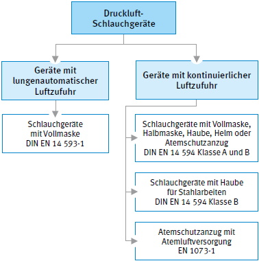
Abb. 37 Einteilung der Druckluft-Schlauchgeräte
Druckluft-Schlauchgeräten wird zur Atemgasversorgung Druckluft mit einem Überdruck bis zu 10 bar zugeführt. Dafür werden druckfeste Druckluft-Zuführungsschläuche benutzt. Die Druckluftzuführung kann sich aus mehreren hintereinander geschalteten Einzelschläuchen zusammensetzen, die durch Kupplungen verbunden sind. Die Kupplungen müssen selbstschließend sein. Der Druckluft-Zuführungsschlauch ist unter Druck formbeständig und knickfest.
Damit auch bei schwerer Arbeit ausreichend Atemgas zur Verfügung steht und der maximal zulässige Einatemwiderstand des Gesamtgerätes (einschließlich Atemanschluss) nicht überschritten wird, dürfen nur Druckluft-Zuführungsschläuche eingesetzt werden, die in der Informationsbroschüre der Herstellerfirma vorgegebenen sind.
Die Lieferleistung der Atemgasversorgung muss so ausgelegt sein, dass zu jeder Zeit ausreichend Atemgas für die größtmögliche Anzahl der Verbraucher zur Verfügung steht. Die Atemgasversorgung kann z. B. durch Druckgasbehälter, Druckgasbehälterbatterien, Netz- und Ringleitungen oder Kompressoren erfolgen.
Es muss sichergestellt sein, dass in das für die Atemgasversorgung vorgesehene Druckluftnetz keine anderen Gase eindringen können. Sind am Einsatzort neben einem Druckluftnetz auch andere Druckgasnetze vorhanden, z. B. für Stickstoff, ist sicherzustellen, dass sich der Druckluft-Zuführungsschlauch für das Schlauchgerät nicht an den Anschluss anderer Druckgasnetze anschließen lässt. Dies wird z. B. durch unterschiedliche konstruktive Gestaltung der Anschlussarmaturen erreicht.
Die Qualität der Atemluft muss DIN EN 12021 entsprechen. Bezüglich des Wassergehaltes gelten folgende Grenzwerte:
Tabelle 27 Wassergehalt der Atemluft nach DIN EN 12021
| Nennversorgungsdruck | zulässiger Wassergehalt bei 1.013 mbar und 20 °C |
| 5 bar | 290 mg/m3 |
| 10 bar | 160 mg/m3 |
| 15 bar | 110 mg/m3 |
| 20 bar | 80 mg/m3 |
| 25 bar | 65 mg/m3 |
| 30 bar | 55 mg/m3 |
| 40 bar | 50 mg/m3 |
Wird technische Druckluft, z. B. aus Druckluft-Netzen, zur Atemluft-Versorgung gewählt, ist durch eine mindestens halbjährige Überprüfung sicherzustellen, dass die Anforderungen an die Atemluftqualität nach DIN EN 12021 erfüllt werden, z. B. Ölgehalt, Wassergehalt etc.
| ! Achtung |
| Wegen der erhöhten Brandgefahr niemals Drucksauerstoff anstelle von Druckluft verwenden! |
Die Luft für Druckluft-Schlauchgeräte muss einen Taupunkt haben, der wenigstens 5 °C unter der vermutlich niedrigsten Gebrauchstemperatur der Geräte liegt, um Kondensation und Einfrieren zu verhüten.
Beim Gebrauch von Druckluft-Schlauchgeräten mit Versorgung aus Druckluft-Netzen bei niedrigen Temperaturen besteht eine erhöhte Gefahr des Einfrierens und der Blockierung der Luftzufuhr. Dies kann durch technische Maßnahmen vermieden werden.
Zur Erhöhung des Tragekomforts kann das in der Regel kühle Atemgas durch technische Vorkehrungen, z. B. Wirbelrohr, angewärmt werden.
Wird das Atemgas einem Druckgasbehälter entnommen, muss eine Warneinrichtung vorhanden sein, die vor dem Ende des Atemgasvorrates warnt. Es ist auf geeignete Weise sicherzustellen, dass beim Auslösen der Warneinrichtung genügend Atemgas zum Verlassen des Gefahrenbereiches zur Verfügung steht.
10.3.2.3.2 Geräte mit kontinuierlichem Luftstrom
Bei dieser Geräteart kann als Atemanschluss eine Vollmaske, eine Halbmaske, eine Haube, ein Helm oder ein Atemschutzanzug eingesetzt werden. Das Ausatemgas und der jeweilige Luftüberschuss entweichen durch ein oder mehrere Ausatemventile, an der Begrenzung des Atemanschlusses oder über gesonderte Überschussventile.
Die Versorgung der atemschutzgerättragenden Person mit Atemgas erfolgt über ein Regelventil oder durch konstante Luftzufuhr. Das Regelventil kann nicht völlig geschlossen werden. Es sichert den von der Herstellerfirma vorgegebenen Mindestvolumenstrom und ermöglicht bei größerem Luftbedarf eine Höherregulierung. Geräte mit Regelventilen können zusätzlich mit einem Atembeutel ausgerüstet sein.
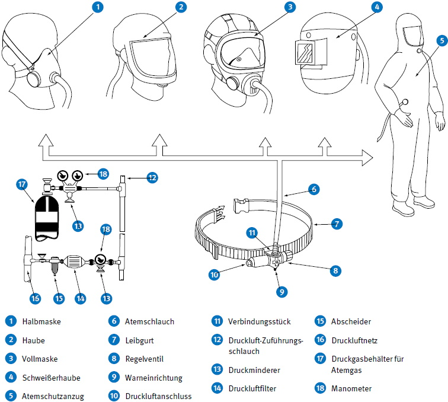
Abb. 38 Schlauchgeräte mit kontinuierlicher Luftversorgung
Die Geräte werden nach DIN EN 14594 in Klassen eingeteilt, wobei die Ziffern 1, 2, 3 oder 4 die Gesamtleckage des Gerätes beschreiben und die Buchstaben "A" und "B" für die mechanische Belastbarkeit des Gerätes stehen.
Tabelle 28 Klasseneinteilung von Druckluft-Schlauchgeräten mit kontinuierlichem Luftstrom
| mechanische Belastbarkeit | maximal nach innen gerichtete Leckage | |||
| 10,0 % | 2,0 % | 0,5 % | 0,05 % | |
| gering | 1A | 2A | 3A | 4A |
| hoch | 1B | 2B | 3B | 4B |
Druckluft-Schlauchgeräte nach DIN EN 14594 müssen eine Einrichtung zur Kontrolle des Mindestvolumenstroms besitzen.
Geräte der Klasse 1A/1B und 2A/2B können und Geräte der Klasse 3A/3B und 4A/4B müssen mit einer Warneinrichtung ausgestattet sein, die eine Unterschreitung des Mindestvolumenstroms signalisiert.
Ein störungsfreier Betrieb der Druckluft-Schlauchgeräte kann bei Umgebungstemperaturen zwischen - 30 °C und + 60 °C erwartet werden. Geräte, die außerhalb dieser Grenzen eingesetzt werden können, müssen entsprechend gekennzeichnet sein.
Strahlerschutzgeräte nach DIN EN 14594 Klasse 4B sind eine Sonderausführung von Druckluft-Schlauchgeräten, die speziell für den rauen Betrieb bei Strahlarbeiten hergestellt werden. Zusätzlich zu ihrer Atemschutzfunktion schützen sie mindestens Kopf, Hals und Schultern der atemschutzgerättragenden Person vor den Auswirkungen des zurückprallenden Strahlmittels.
Geeignete Strahlerschutzanzüge entsprechen den einschlägigen Normen, z. B. DIN EN ISO 14877.
Bei Druckluft-Schlauchgeräten mit Atemschutzanzug nach DIN EN 14594 übernimmt der Anzug gleichzeitig die Funktion des Atemanschlusses. Die atemschutzgerättragende Person ist vollständig von der Umgebungsatmospähre isoliert. Die Überschussluft dient der Ventilation und unterstützt je nach Luftführung und Volumenstrom den Transport der Körperwärme aus dem Anzug.
Eine spezielle Ausführung ist der Atemschutzanzug mit Atemluftversorgung nach DIN EN 1073-1 als Schutz der Atemwege und des gesamten Körpers gegen radioaktive Kontamination durch feste Partikel.
10.3.2.3.3 Geräte mit Lungenautomat
Bei dieser Geräteart wird als Atemanschluss eine Vollmaske eingesetzt. Das Ausatemgas entweicht durch das Ausatemventil der Vollmaske.
Bei den Druckluft-Schlauchgeräten nach DIN EN 14593-1 wird zur Atemluftversorgung Atemluft mit einem Überdruck bis zu 10 bar an das Gerät herangeführt.
Durch eine atemgesteuerte Dosiereinrichtung (Lungenautomat in Normal- oder Überdruckausführung) wird die Atemluftzufuhr automatisch dem Bedarf angepasst, d. h., die Atemluft strömt nur während der Dauer der Einatmung in den Atemanschluss. Der Lungenautomat kann sich am Gürtel oder direkt am Atemanschluss befinden.
10.3.3.1 Allgemeines
Frei tragbare Isoliergeräte versorgen die atemschutzgerättragende Person mit Atemgas, das im Gerät mitgeführt wird. Die Einsatzdauer der Geräte ist unterschiedlich und wird u. a. durch die Menge des mitgeführten Atemgases begrenzt. Es wird zwischen Behältergeräten mit Druckluft und Regenerationsgeräten, die die Ausatemluft aufbereiten, unterschieden.
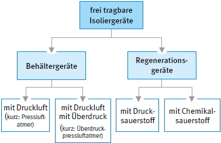
Abb. 39 Einteilung der frei tragbaren Isoliergeräte
10.3.3.2 Behältergeräte mit Druckluft (Pressluftatmer)
10.3.3.2.1 Allgemeines
Behältergeräte mit Druckluft und Vollmaske nach DIN EN 137 werden in zwei Typen eingeteilt:
Bei gleichen Leistungsanforderungen besteht der Unterschied der beiden Typen ausschließlich in ihrer Widerstandsfähigkeit bei Beflammung und Strahlungswärme. Diese Anforderungen sind bei Typ 2-Geräten höher. Beide Typen gibt es in Normal- und Überdruckausführung.
Zusätzlich zu den Pressluftatmern mit Vollmaske gibt es Behältergeräte mit Druckluft und Halbmaske nach DIN EN 14435 als Überdruckgeräte. Bei den Leistungsanforderungen und der Entflammbarkeit entsprechen sie den Typ 1-Geräten.
Pressluftatmer können mittels eines Tragegestells auf dem Rücken oder mit einer Tragevorrichtung variabel (z. B. seitlich) getragen werden.
Druckgasbehälter enthalten nur einen begrenzten Vorrat an Atemgas, so dass die Gebrauchsdauer eingeschränkt ist. Behältergeräte sind für lange Anmarschwege und für länger dauernde Arbeiten bedingt geeignet (z. B. Tunnel, Tiefgaragen, Hochhäuser, Gasbehälter).
Das Gewicht von Pressluftatmern liegt je nach Gerätetyp zwischen ca. 5 kg und 18 kg. Das Höchstgewicht von 18 kg darf nicht überschritten werden.
Pressluftatmer bestehen aus den in Abbildung 40 dargestellten Bauteilen.
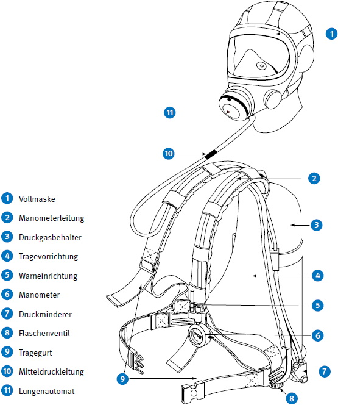
Abb. 40 Behältergerät mit Druckluft
Der Atemgasvorrat wird in ein oder zwei Druckgasbehältern mitgeführt. Die Druckgasbehälter müssen mit Druckluft befüllt werden, die der DIN EN 12021 entspricht. Bei Pressluftatmern mit zwei Druckgasbehältern müssen beim Einsatz stets beide Flaschenventile geöffnet sein.
Das Atemgas strömt vom Druckminderer durch eine Mitteldruckleitung zum Lungenautomat. Vom Lungenautomat wird das Atemgas nach Bedarf dosiert. Die Verbindung zwischen den Atemanschlüssen und der Atemgaszuführung wird durch einen speziellen Anschluss erzeugt. Diese unterscheiden sich je nach Ausführung des Pressluftatmers und dürfen nicht mittels Adapter betrieben werden.
Pressluftatmer sind mit einer pneumatischen oder elektronischen Warneinrichtung ausgerüstet, die bei einem Restdruck von 55 ± 5 bar oder wenigstens bei 200 l Luft Restinhalt anspricht. Dadurch wird sichergestellt, dass der atemschutzgerättragenden Person noch ca. 5 Minuten Atemgasvorrat für den Rückzug verbleiben.
Pressluftatmer können mit weiteren Mitteldruckanschlüssen ausgerüstet sein. Diese können beispielsweise zur Versorgung einer zweiten Person im Rettungsfall oder für die Luftversorgung aus einer alternativen Luftquelle genutzt werden. Weitere Ausrüstungsmöglichkeiten sind das Schnellfüllventil zum Wiederbefüllen des/der Druckgasbehälter aus einer externen Druckluft-Versorgungsquelle sowie eine Bypass-Einrichtung für Umgebungsluft. Mit dieser Einrichtung ist es möglich, bei angelegtem Atemanschluss, direkt aus der Umgebungsluft zu atmen. Dieser Gebrauch ist nur bei schadstofffreier Umgebungsluft mit ausreichender Sauerstoffkonzentration zulässig und nicht für Arbeitseinsätze vorgesehen.
10.3.3.2.2 Pressluftatmer mit Normaldruck (Normaldruck-Gerät) mit Vollmaske
Bei Pressluftatmern mit Normaldruck wird während der Einatmung in der Maske Unterdruck erzeugt. Eine geringe nach innen gerichtete Leckage am Dichtrahmen der Maske kann deshalb nicht ausgeschlossen werden.
Atemanschlüsse für Pressluftatmer mit Normaldruck sind üblicherweise mit Rundgewindeanschluss ausgestattet. Das Ausatemgas wird über ein Ausatemventil abgeführt.
10.3.3.2.3 Pressluftatmer mit Überdruck (Überdruck-Gerät) mit Vollmaske
Bei Pressluftatmern mit Überdruck ist immer ein leichter Überdruck im Maskeninnern auch während der Einatmung vorhanden. Dadurch können bei geringen Leckagen keine Schadstoffe in das Innere der Maske eindringen. Es ist jedoch möglich, dass die Leckagen zu erheblichen Druckluftverlusten führen können. Diese können die Einsatzzeit des Gerätes wesentlich verkürzen.
Um Verwechslungen zu vermeiden, darf bei Überdruckgeräten der Rundgewindeanschluss nach DIN EN 148-1 nicht verwendet werden.
10.3.3.2.4 Pressluftatmer mit Überdruck (Überdruck-Gerät) und Halbmaske
Pressluftatmer mit Überdruck und Halbmaske entsprechen in ihrer Funktionsweise den Geräten mit Überdruck und Vollmaske. Die mechanische Festigkeit zwischen Maske und Funktionsteil ist jedoch konstruktionsbedingt geringer.
Bei Überdruckgeräten mit Halbmaske dürfen die Gewindeanschlüsse nach DIN EN 148 Teile 1 bis 3 nicht verwendet werden.
10.3.3.3 Regenerationsgeräte
10.3.3.3.1 Allgemeines
Regenerationsgeräte versorgen die atemschutzgerättragende Person mit Sauerstoff, der im Gerät mitgeführt wird. Als Sauerstoffvorrat kann Drucksauerstoff, ein Drucksauerstoff-Stickstoff-Gemisch oder chemisch gebundener Sauerstoff verwendet werden.
Als Atemanschlüsse dienen Vollmasken oder Mundstückgarnituren, jeweils ohne Atemventile.
Das Ausatemgas wird im Gerät regeneriert und nicht über ein Ausatemventil in die Umgebungsatmosphäre abgegeben. Kohlenstoffdioxid (CO2) im Ausatemgas wird in einer Regenerationspatrone gebunden und der verbrauchte Sauerstoff des ausgeatmeten Atemgases aus dem Vorrat im Gerät ergänzt.
In Regenerationsgeräten steigt der Sauerstoffgehalt des Einatemgases über 21 Vol.-%, sobald die Beatmung beginnt.
Während des Gebrauchs wird durch die chemischen Reaktionen in der Regenerationspatrone Wärme erzeugt, welche die Temperaturen des Einatemgases bis auf ca. 45 °C ansteigen lässt. An der Oberfläche der Regenerationspatronen können je nach Art des verwendeten Chemikals wesentlich höhere Temperaturen auftreten.
Bei Gefahr der Bildung explosionsfähiger Atmosphäre dürfen keine Geräte benutzt werden, die bei der Beatmung selbst Zündquelle sein können. Es ist die Informationsbroschüre der Herstellerfirma und die Zündtemperatur der Gase zu berücksichtigen.
Die Gebrauchsdauer liegt entsprechend dem unterschiedlichen Sauerstoffvorrat und der CO2-Bindungskapazität zwischen 15 Minuten und mehreren Stunden und damit deutlich über der Gebrauchsdauer vergleichbarer Pressluftatmer. Sie sind deshalb besonders geeignet für länger dauernde Arbeiten, z. B. Einsatz im Bergbau und im Tunnelbau.
Das Gewicht von Regenerationsgeräten liegt je nach Geräteklasse und Gerätetyp zwischen ca. 3 kg und 16 kg.
Die Geräte sind so ausgelegt, dass ein störungsfreier Betrieb über den Temperaturbereich von -6 °C bis +60 °C erwartet werden kann.
10.3.3.3.2 Regenerationsgeräte mit Drucksauerstoff (Sauerstoffschutzgeräte)
10.3.3.3.2.1 Allgemeines
Ein Regenerationsgerät mit Drucksauerstoff nach DIN EN 145 besteht z. B. aus den in Abbildung 41 dargestellten Bauteilen.
Bei Regenerationsgeräten mit Drucksauerstoff strömt das ausgeatmete Atemgas aus dem Atemanschluss durch das Ausatemventil und den Ausatemschlauch in die Regenerationspatrone, in welcher das im Atemgas enthaltene Kohlenstoffdioxid (CO2) chemisch gebunden wird. Die bei dieser Reaktion erzeugte Wärme kann durch einen Kühler abgeführt werden. Das gereinigte Atemgas strömt in den Atembeutel. Überschüssiges Atemgas strömt durch ein Überdruckventil in die Umgebungsatmosphäre ab.
Der verbrauchte Sauerstoff wird aus dem Druckgasbehälter ersetzt. Das regenerierte Atemgas gelangt über den Einatemschlauch und das Einatemventil in den Atemanschluss. So ist der Kreislauf geschlossen.
Der Druck-Sauerstoffvorrat ist in geeigneten Zeitabständen (10 Minuten bis längstens 15 Minuten) zu überwachen, damit rechtzeitig der Gefahrenbereich verlassen werden kann.
Als Sauerstoffvorrat dient überwiegend Sauerstoff mit einem Reinheitsgrad größer als 99,5 Vol.-% oder für Sonderzwecke ein Sauerstoff/Stickstoff-Gemisch (Mischgas). Der maximale Fülldruck beträgt 200 bar oder 300 bar. Der Druck kann an einem Manometer abgelesen werden.
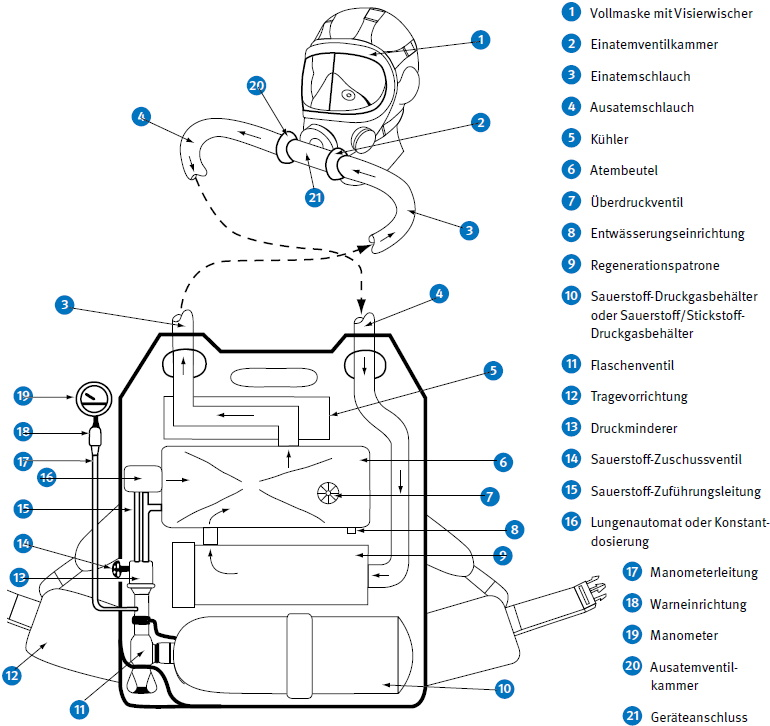
Abb. 41 Regenerationsgerät mit Drucksauerstoff und Vollmaske mit Visierwischer
Sauerstoffschutzgeräte werden nach ihrem Sauerstoffvorrat in folgende Geräteklassen eingeteilt:
Tabelle 29 Klasseneinteilung der Sauerstoffschutzgeräte
| Geräteklasse | Mindest-Sauerstoffvorrat (I) |
| 1-Stunden-Gerät | 150 |
| 2-Stunden-Gerät | 240 |
| 4-Stunden-Gerät | 360 |
Der Sauerstoffvorrat wird in einem Druckgasbehälter mit einem Inhalt von 0,5 l bis 2,0 l mitgeführt. Bei einem Nennfülldruck von 200 bar oder 300 bar ergibt sich ein Sauerstoffvorrat von bis zu 600 l. Ein Druckminderer reduziert den Behälterdruck auf 5 bar bis 10 bar.
Entsprechend der sich bei der Atmung im Atemanschluss einstellenden Druckverhältnisse gibt es Geräte in Normaldruckausführung oder in Überdruckausführung.
Die Sauerstoffdosierung kann entweder konstant, lungenautomatisch oder eine Kombination aus beiden sein. Üblich ist eine kombinierte Dosierung zum Decken des zusätzlichen Sauerstoffbedarfs bei schwerer Arbeit.
Ein Warnsignal dient der atemschutzgerättragenden Person als Warnung, falls das Flaschenventil nicht geöffnet worden ist. Dieses Signal ist kein Rückzugssignal.
Die Geräte können auch mit einer Restdruckwarnung ausgerüstet sein, die die atemschutzgerättragende Person warnt, wenn der Restdruck im Sauerstoff-Druckgasbehälter unter 55 bar absinkt.
Überschüssiges Atemgas kann durch ein Überdruckventil in die Umgebung abströmen. Ein Sauerstoff-Zuschussventil erlaubt der atemschutzgerättragenden Person im Notfall die direkte Einspeisung von Sauerstoff aus dem Hochdruckteil des Gerätes in den Atemkreislauf. Geräte mit Druck-Sauerstoff werden allgemein auf dem Rücken getragen.
Das maximale Gerätegewicht bei einem 4-Stunden-Gerät beträgt im einsatzbereiten Zustand mit Atemanschluss und vollem Druckgasbehälter 16 kg.
Für besondere Einsatzzwecke, z. B. bei erhöhtem Umgebungsdruck, werden aus atemphysiologischen Gründen sogenannte "Mischgas-Kreislaufgeräte" mit vorgefertigtem Druck-Sauerstoff/Stickstoff-Gemisch verwendet (üblicherweise aus 60 Vol.-% Sauerstoff und 40 Vol.-% Stickstoff).
10.3.3.3.2.2 Kurzzeit-Drucksauerstoff-Schutzgeräte für leichte Arbeit
Kurzzeit-Regenerationsgeräte mit Drucksauerstoff für leichte Arbeit nach DIN 58651-2 werden nach der nominellen Haltezeit in folgende Geräteklassen eingeteilt:
Tabelle 30 Klasseneinteilung der Kurzzeit-Drucksauerstoff-Schutzgeräte für leichte Arbeit
| Geräteklasse | nominelle Haltezeit (Minuten) |
| D 15 L | 15 |
| D 23 L | 23 |
| D 30 L | 30 |
Die tatsächliche Gebrauchsdauer kann in Abhängigkeit vom Atemminutenvolumen von der nominellen Haltezeit abweichen.
Die gebrauchsfertigen Geräte mit Atemanschluss wiegen zwischen 3 kg und 5 kg.
Die Geräte sind für leichte Arbeit, z. B. Kontrollen, Inspektionen, Schalt- und Bedienarbeiten, ausgelegt. Sie sind nicht geeignet für Brandbekämpfung und dort, wo Gefahren durch Hitze, Flammen oder Funkenflug bestehen.
Das Funktionsprinzip dieser kleineren und kompakten Geräte ähnelt dem der Geräte für Arbeit und Rettung. Als Sauerstoffdosierung wird Konstantdosierung oder Mischdosierung (konstant und atemgesteuert) verwendet. Eine Kühlung des Atemgases ist bei diesen Geräten nicht vorgesehen.
Die Geräte werden während des Gebrauchs vor der Brust getragen. Die Verbindung zwischen Gerät und Atemanschluss erfolgt mit nur einem Atemschlauch, in dem Pendelatmung herrscht.
Gegen Beschädigung durch äußere Einflüsse, beim Mitführen, Transport auf Maschinen und Fahrzeugen sind die Geräteteile in einem Tragebehälter oder in einem Gehäuse untergebracht.
Alle Geräte sind mit einer Warneinrichtung ausgerüstet, die die atemschutzgerättragende Person spätestens bei 2/3 der nominellen Haltezeit optisch und akustisch warnt.
10.3.3.3.3 Regenerationsgeräte mit Chemikalsauerstoff
10.3.3.3.3.1 Chemikalsauerstoff(KO2)schutzgeräte
Bei Chemikalsauerstoff(KO2)schutzgeräten reagieren der Wasserdampf und das Kohlenstoffdioxid (CO2) des ausgeatmeten Atemgases mit dem Inhalt der Chemikalpatrone, der aus Kaliumdioxid (KO2) besteht. Hierdurch entwickelt sich Sauerstoff im Überschuss und strömt in den Atembeutel. Die Sauerstoffentwicklung ist quasi atemgesteuert ohne Lungenautomat. Die atemschutzgerättragende Person atmet aus dem Atembeutel durch den Einatemschlauch und das Einatemventil ein.
Überschüssiger Sauerstoff entweicht über ein Überdruckventil in die Umgebungsatmosphäre.
Ein Chemikalsauerstoff(KO2)schutzgerät besteht aus den in Abbildung 42 dargestellten Bauteilen:
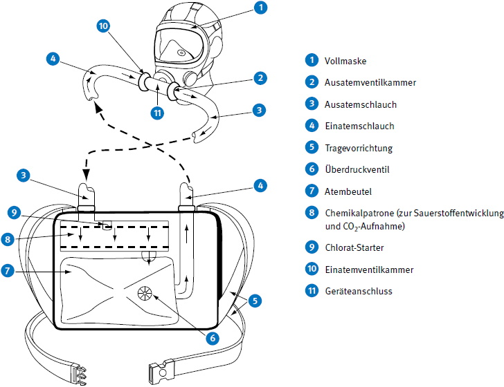
Abb. 42 Chemikalsauerstoff(KO2)schutzgerät
Chemikalsauerstoff(KO2)schutzgeräte nach DIN 58652-2 werden nach der nominellen Haltezeit in folgende Geräteklassen eingeteilt:
Tabelle 31 Klasseneinteilung der Chemikalsauerstoff(KO2)schutzgeräte
| Geräteklasse | nominelle Haltezeit (Minuten) |
| K 30 S | 30 |
| K 60 S | 60 |
| K 120 S | 120 |
| K 240 S | 240 |
Die tatsächliche Gebrauchsdauer kann in Abhängigkeit vom Atemminutenvolumen von der nominellen Haltezeit abweichen.
Die Geräte werden vorzugsweise auf dem Rücken getragen. Regenerationspatrone, Atembeutel usw. sind gegen Beschädigung durch äußere Einflüsse, beim Mitführen, oder Transport auf Maschinen und Fahrzeugen mit einer Abdeckung versehen.
Die gebrauchsfertigen Geräte mit Atemanschluss wiegen zwischen 10 kg und 16 kg.
Die Geräte sind mit einer Warneinrichtung ausgerüstet, welche den Sauerstoffvorrat optisch anzeigt und die atemschutzgerättragende Person spätestens bei einer Restkapazität von 20 % optisch und akustisch warnt.
10.3.3.3.3.2 Chemikalsauerstoff(NaClO3)schutzgeräte
Bei diesen Geräten wird Sauerstoff durch thermische Zersetzung von Natriumchlorat (NaClO3) entwickelt. Nach Zündung der Chemikalpatrone durch einen Starter wird eine konstante Sauerstoffmenge frei, die den Bedarf auch bei hoher Beanspruchung abdeckt.
Die Sauerstoffentwicklung kann nach Beginn nicht mehr unterbrochen werden. Die Einsatzzeit ist wegen der konstanten Sauerstoffabgabe nicht variabel.
Überschüssiges Atemgas entweicht über eine Überschusseinrichtung in die Umgebungsatmosphäre.
Das Ausatemgas wird in einer Regenerationspatrone, welche mit CO2-Absorptionsmittel z. B. Atemkalk gefüllt ist, vom ausgeatmeten Kohlenstoffdioxid befreit. Das regenerierte Atemgas strömt in einen Atembeutel, wo es zur Einatmung wieder zur Verfügung steht. Das Atemgas kann zwischen Atemanschluss und Gerät in Pendelatmung (nur ein Atemschlauch) und Kreislaufatmung (Ausatem- und Einatemschlauch) strömen. Als Atemanschluss werden Vollmaske oder Mundstückgarnitur mit Schutzbrille verwendet.
Chemikalsauerstoff(NaClO3)schutzgeräte bestehen aus den in Abbildung 43 dargestellten Bauteilen.
Chemikalsauerstoff(NaClO3)schutzgeräte nach DIN 58652-4 werden nach den Druckverhältnissen im Atemanschluss in Normaldruckausführung oder in Überdruckausführung betrieben. In Verbindung mit der nominellen Haltezeit werden sie in folgende Geräteklassen eingeteilt:
Tabelle 32 Klasseneinteilung der Chemikalsauerstoff(NaClO3)schutzgeräte
| Geräteklasse | nominelle Haltezeit (Minuten) |
|
| Normaldruck | Überdruck | |
| C 30 SN | C 30 SP | 30 |
| C 60 SN | C 60 SP | 60 |
| C 120 SN | C 120 SP | 120 |
| C 240 SN | C 240 SP | 240 |
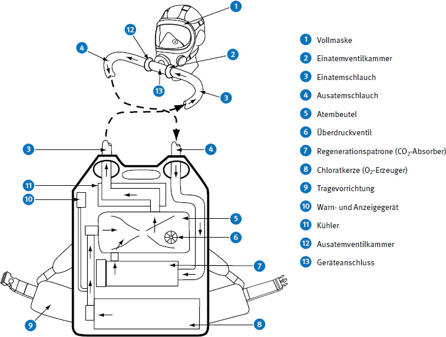
Abb. 43 Chemikalsauerstoff(NaClO3)schutzgerät
Die tatsächliche Gebrauchsdauer ist identisch mit der nominellen Haltezeit.
Die Geräte werden vorzugsweise auf dem Rücken getragen. Regenerationspatrone, Atembeutel usw. sind gegen Beschädigung durch äußere Einflüsse, beim Mitführen, oder Transport auf Maschinen und Fahrzeugen mit einer Abdeckung versehen.
Die gebrauchsfertigen Geräte mit Atemanschluss wiegen zwischen 10 kg und 16 kg.
Die Geräte sind mit einer Warneinrichtung ausgerüstet, welche den Sauerstoffvorrat optisch anzeigt und die atemschutzgerättragende Person spätestens bei einer Restkapazität von 20 % optisch und akustisch warnt.
10.3.3.3.3.3 Kurzzeit-Chemikalsauerstoff-Schutzgeräte für leichte Arbeit
Kurzzeit-Chemikalsauerstoff(KO2)schutzgeräte nach DIN 58652-1 werden nach der nominellen Haltezeit in folgende Geräteklassen eingeteilt:
Tabelle 33 Klasseneinteilung der Kurzzeit-Chemikalsauerstoff(KO2)schutzgeräte für leichte Arbeit
| Geräteklasse | nominelle Haltezeit (Minuten) |
| K 15 L | 15 |
| K 23 L | 23 |
| K 30 L | 30 |
Die tatsächliche Gebrauchsdauer kann, in Abhängigkeit vom Atemminutenvolumen, von der nominellen Haltezeit abweichen.
Kurzzeit-Chemikalsauerstoff(NaClO3)schutzgeräte nach DIN 58652-3 werden nach der nominellen Haltezeit in folgende Geräteklassen eingeteilt:
Tabelle 34 Klasseneinteilung der Kurzzeit-Chemikalsauerstoff(NaCIO3)schutzgeräte für leichte Arbeit
| Geräteklasse | nominelle Haltezeit (Minuten) |
| K 15 L | 15 |
| K 23 L | 23 |
| K 30 L | 30 |
Die tatsächliche Gebrauchsdauer ist identisch mit der nominellen Haltezeit.
Beide Gerätetypen sind für leichte Arbeiten, z. B. Kontrollen, Inspektionen, Schalt- und Bedienarbeiten, ausgelegt. Sie sind nicht geeignet für Brandbekämpfung und dort, wo Gefahren durch Hitze, Flammen oder Funkenflug bestehen.
Die gebrauchsfertigen Geräte mit Atemanschluss wiegen zwischen 3 kg und 5 kg.
Diese Geräte werden vorzugsweise vor der Brust getragen. Die Verbindung zwischen Gerät und Atemanschluss erfolgt meistens durch nur einen Atemschlauch, in dem Pendelatmung herrscht.
Die Geräte sind mit einer Warneinrichtung ausgerüstet, die die atemschutzgerättragende Person spätestens mit Ablauf von 2/3 der nominellen Haltezeit optisch und akustisch warnt.
Atemschutzgeräte für Fluchtzwecke werden wie folgt eingeteilt:
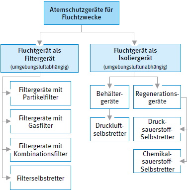
Abb. 44 Einteilung der Atemschutzgeräte für Fluchtzwecke
| ! Achtung |
| Atemschutzgeräte für Fluchtzwecke sind keine Arbeitsgeräte und dürfen nur für die Flucht benutzt werden. |
Atemschutzgeräte für Fluchtzwecke sind so ausgelegt, dass sie schnell zu öffnen, einfach anzulegen und bei der Flucht möglichst wenig hinderlich sind, um ein schnelles, möglichst gefahrloses Verlassen des Gefahrbereiches zu gestatten. Solche, die bei der Benutzung von Hand gehalten werden müssen, dürfen nicht eingesetzt werden, weil sie die Bewegungsfreiheit behindern. Jedes Atemschutzgerät für Fluchtzwecke ist mit einer leicht zugänglichen Information der Herstellerfirma versehen.
10.4.2.1 Atemschutzgeräte für Fluchtzwecke mit Partikel-, Gas oder Kombinationsfilter
Filtergeräte für Selbstrettung wirken abhängig von der Umgebungsluft. Ein vollständiges Gerät besteht aus einem Atemanschluss und einem oder mehreren so damit verbundenen Gas-, Partikel- oder Kombinationsfilter(n), dass ein unbeabsichtigtes Lösen der Filter nicht möglich ist. Die Geräte werden gebrauchsfertig in einem ausreichend dichten Behälter aufbewahrt.
Sie müssen den Leistungsanforderungen der DIN 58647-7 bzw. der DIN EN 403 entsprechen.
Atemschutzgeräte für Fluchtzwecke mit Filtern schützen bei der Flucht vor Partikeln, Gasen, Dämpfen oder deren Kombinationen. Als Atemanschluss kann eine Vollmaske, Halbmaske, Mundstückgarnitur oder Haube verwendet werden.
Geräte mit Vollmaske, Halbmaske oder Mundstückgarnitur entsprechen in ihrem Aussehen und ihrer Wirkungsweise den Filtergeräten. Lediglich in ihren Verpackungen sind die besonderen Anforderungen an ein Atemschutzgerät für Fluchtzwecke berücksichtigt.
Geräte mit Haube haben als Atemanschluss eine Vollmaske oder Halbmaske, die fest mit der Haube verbunden ist. Die Haube bedeckt den Kopf und unter Umständen Hals und Schulter. Der Vorteil dieser Ausführungsform ist, dass hierbei auch die Haare, der Kopf und die Augen vor Reizstoffen bzw. Wärme geschützt werden. Nach der Art der Filter unterscheidet man:
10.4.2.2 Filterselbstretter
Filterselbstretter werden gemäß der DIN EN 404 in vier Klassen eingeteilt, je nach Einsatzdauer und Einsatzschwere. Der Typ A ist für Atemminutenvolumen von 30 l/min ausgelegt. Der Typ B deckt erschwerte Fluchtbedingungen ab und ist für ein Atemminutenvolumen von 40 l/min vorgesehen.
Tabelle 35 Klassen der Filterselbstretter
| Klasse | Mindesthaltezeit (Minuten) |
|
| FSR 1A | FSR 1B | 60 |
| FSR 2A | FSR 2B | 75 |
| FSR 3A | FSR 3B | 90 |
| FSR 4A | FSR 4B | 120 |
Werden Filterselbstretter unter besonders rauen Umgebungsbedingungen benutzt, wie sie z. B. im Untertageeinsatz des Bergbaus vorherrschen, dann müssen sie besondere mechanische Festigkeiten aufweisen. Derartige Geräte werden mit einem "R" (rough handling) gekennzeichnet.
Diese Gerätegruppe hat als Atemanschluss ein Mundstück mit Nasenklemme. Sie werden entweder direkt am Kopf getragen, durch das Mundstück geführt und mittels Kopftrageband am Kopf gehalten oder sie werden durch ein Nackentrageband gehalten und vor der Brust getragen. Letztere sind mit einem Atemschlauch ausgestattet, der den Filterteil mit dem Mundstück verbindet.
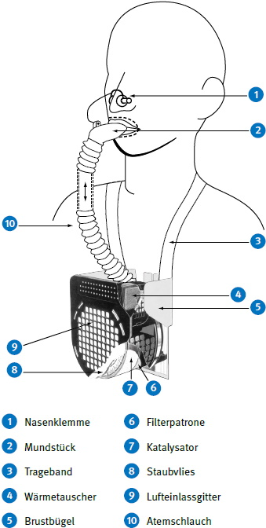
Abb. 45 Filterselbstretter – schematische Darstellung
Über einen Lufteinlass, der mit einem Staubschutz versehen ist, gelangt die CO-haltige Umgebungsluft in den mehrstufigen Filterteil inklusiv Katalysator, der Kohlenstoffmonoxid zu Kohlenstoffdioxid umwandelt. Dieser Prozess setzt Wärme frei. Filterselbstretter sind daher mit einem regenerativ wirkenden Wärmetauscher ausgestattet. Die ausgeatmete Luft wird über ein Ausatemventil in die Umgebungsluft abgegeben. Ein Trockenmittel schützt den Katalysator vor eindringender Feuchtigkeit.
10.4.3.1 Druckluft-Selbstretter
Druckluft-Selbstretter nach DIN EN 402 bzw. DIN EN 1146 werden nach ihrer nominellen Haltezeit in Stufen von 5 Minuten eingeteilt.
Das Gerät ist mit einer Druckanzeigevorrichtung (Druckmessgerät, Indikator) ausgerüstet, an welcher der Füllzustand des Druckgasbehälters abgelesen werden kann.
Bei Geräten mit Vollmaske oder Mundstückgarnitur wird ein Atemgasvorrat von mindestens 200 l in einem Druckgasbehälter mitgeführt. Der maximale Nennfülldruck des Druckgasbehälters kann 200 bar oder 300 bar betragen. Die Reduzierung des Behälterdruckes kann entweder zweistufig mittels Druckminderer und Lungenautomat oder einstufig erfolgen. Entsprechend den sich bei der Beatmung im Atemanschluss einstellenden Druckverhältnissen, gibt es Geräte in Normaldruckausführung oder in Überdruckausführung.
Druckluft-Selbstretter mit Haube ermöglichen der atemschutzgerättragenden Person die Atmung aus einer mit einem kontinuierlichen Luftvolumenstrom versorgten Atemschutzhaube. Das Atemgas wird einem oder mehreren Druckgasbehälter(n) entnommen. Ausatem- und Überschussluft entweichen aus der Haube durch ein Ausatemventil (falls vorhanden) oder an den Begrenzungen der Haube direkt in die Umgebungsatmosphäre. Der Druckgasbehälter wird entweder durch ein Schnellöffnungsventil oder eine gleichartige Einrichtung geöffnet. Die Haube darf erst angelegt werden, wenn vorher der/die Druckgasbehälter geöffnet ist/sind. Unter Hauben ohne Luftzufuhr besteht Erstickungsgefahr.
Man unterscheidet zwischen Geräten für stationäres Bereithalten und Mitführgeräten.
Die Geräte sind so ausgeführt, dass ein einfaches Öffnen und Anlegen möglich sind.
Das Gerätegewicht des gebrauchsfertigen Druckluft-Selbstretters mit Vollmaske oder Mundstückgarnitur liegt unter 5 kg.
Geräte mit Haube, die längere Zeit mitgeführt werden müssen, dürfen einschließlich Tragebehälter nicht mehr als 5 kg wiegen. Werden diese Geräte stationär bereitgehalten, ist ein Gewicht bis 7 kg zulässig.
Ein Behältergerät mit Druckluft für Selbstrettung (Druckluft-Selbstretter) nach DIN EN 402 besteht aus den in Abbildung 46 dargestellten Bauteilen.
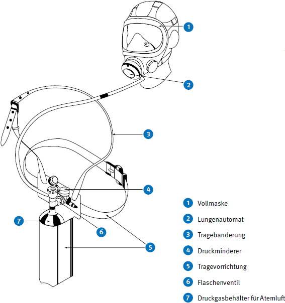
Abb.46 Druckluft-Selbstretter
10.4.3.2 Drucksauerstoff-Selbstretter
Ein solches Gerät nach DIN EN 13794 besteht aus den in Abbildung 47 dargestellten Bauteilen. Der zur Atmung notwendige Sauerstoff wird in einem Sauerstoff-Druckbehälter mit einem Nennfülldruck von bis zu 300 bar mitgeführt.
Bei Drucksauerstoff-Selbstrettern gelangt das Ausatemgas vom Atemanschluss über einen Atemschlauch und eine Regenerationspatrone in den Atembeutel, der zur Speicherung des Atemgases dient. Die Regenerationspatrone enthält ein CO2-Absorptionsmittel, z. B. Atemkalk, welches das in dem Ausatemgas enthaltene Kohlenstoffdioxid bindet. Das regenerierte Atemgas gelangt aus dem Atembeutel über den Atemschlauch wieder zum Atemanschluss. Im Atemschlauch herrscht Pendelatmung. Als Atemanschluss wird eine Vollmaske oder eine Mundstückgarnitur mit Schutzbrille verwendet.
Zum Ersatz des verbrauchten Sauerstoffs wird, durch Konstantdosierung oder durch atemgesteuerte Dosierung oder eine geeignete Kombination beider, Sauerstoff aus dem Vorrat dem Atemkreislauf zugeführt. Überschüssiges Atemgas kann über ein selbsttätig wirkendes Überdruckventil in die Umgebungsatmosphäre entweichen.
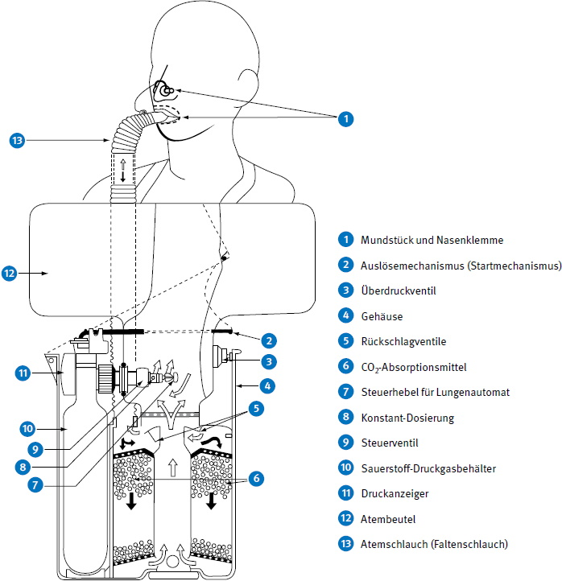
Abb. 47 Drucksauerstoff-Selbstretter
Drucksauerstoff-Selbstretter besitzen einen Druckanzeiger, an dem der Behälterdruck abgelesen werden kann.
Drucksauerstoff-Selbstretter werden nach der nominellen Haltezeit in Stufen von 5 Minuten bis zu 30 Minuten und darüber in Stufen von 10 Minuten eingeteilt.
Die Gewichte der kompletten Drucksauerstoff-Selbstretter einschließlich Tragebehälter liegen zwischen 3 kg und 6 kg.
10.4.3.3 Chemikalsauerstoff-Selbstretter
10.4.3.3.1 Chemikalsauerstoff(KO2)selbstretter
Bei Chemikalsauerstoff(KO2)selbstrettern gelangt das Ausatemgas vom Atemanschluss über Atemschlauch, Wärmeaustauscher und Ausatemventil in die Regenerationspatrone und von hier in den Atembeutel. In der Regenerationspatrone, die mit KO2 gefüllt ist, wird die Feuchtigkeit und das Kohlenstoffdioxid des Ausatemgases chemisch gebunden und Sauerstoff im Überschuss freigesetzt.
Das regenerierte Atemgas gelangt aus dem Atembeutel über Luftfilter, Einatemventil, Wärmeaustauscher und Atemschlauch wieder zum Atemanschluss. Zur besseren Ausnutzung des Chemikalvorrates wird bei Kleingeräten die Regenerationspatrone sowohl bei der Ausatmung als auch bei der Einatmung durchströmt.
Überschüssiges Atemgas kann durch ein selbsttätig wirkendes Überdruckventil in die Umgebungsatmosphäre entweichen.
Die Sauerstoffentwicklung ist abhängig vom Atemminutenvolumen. So werden in Ruhe wesentlich längere Haltezeiten als bei starker physischer Beanspruchung durch schwere Arbeit erreicht. Die Sauerstoffentwicklung passt sich also selbsttätig dem Sauerstoffbedarf der atemschutzgerättragenden Person an.
Das Luftfilter reinigt das Einatemgas. Der Wärmeaustauscher kühlt das Einatemgas. Er nimmt die in der Regenerationspatrone entstandene Wärme während des Einatmens auf und gibt sie bei der Ausatmung an das 37 °C warme Ausatemgas wieder ab. Als Atemanschluss wird bei den bisher bekannten Geräten eine Mundstückgarnitur verwendet. Das einsatzbereite Gerät ist in einem Tragebehälter aus Edelstahl oder Kunststoff luftdicht verpackt.
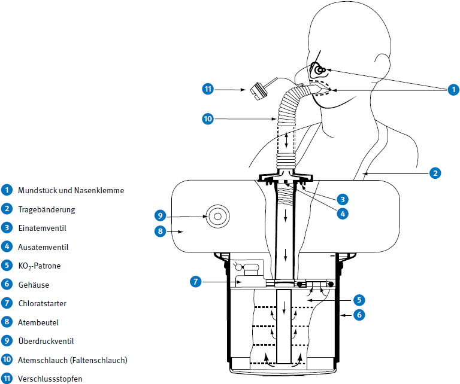
Abb. 48 Chemikalsauerstoff(KO2)selbstretter
Chemikalsauerstoff(KO2)selbstretter werden nach der nominellen Haltezeit in Geräteklassen in Stufen von 5 min bis zu 30 min und darüber in Stufen von 10 min eingeteilt.
Die angegebenen nominellen Haltezeiten beziehen sich auf ein Atemzeitvolumen von 35 l/min.
Die Gerätegewichte der kompletten Chemikalsauerstoff(KO2)selbstretter einschließlich Tragebehälter liegen zwischen 2 kg und 6 kg.
Ein Chemikalsauerstoff(KO2)selbstretter nach DIN EN 13794 besteht aus den in Abbildung 48 dargestellten Bauteilen.
10.4.3.3.2 Chemikalsauerstoff(NaCIO3)selbstretter
Chemikalsauerstoff(NaCIO3)selbstretter werden nach der nominellen Haltezeit in Geräteklassen in Stufen von 5 Minuten bis zu 30 Minuten und darüber in Stufen von 10 Minuten eingeteilt.
Bei diesen Geräten wird Sauerstoff durch thermische Zersetzung von NaCl03 entwickelt. Nach Zündung der Chemikalpatrone durch einen Starter wird eine konstante Sauerstoffmenge von ca. 4 l/min entwickelt, die den Bedarf auch bei hoher Beanspruchung abdeckt. Die Sauerstoffentwicklung kann nicht mehr unterbrochen werden. Die Einsatzzeit ist wegen der konstanten Sauerstoffabgabe nicht variabel.
Überschüssiges Atemgas wird über ein Überschussventil in die Umgebungsatmosphäre abgegeben.
Das Ausatemgas wird in einer Regenerationspatrone regeneriert, welche mit Atemkalk gefüllt ist. Als Atemanschluss wird eine Mundstückgarnitur mit Schutzbrille oder eine Vollmaske verwendet.
Ein Chemikalsauerstoff(NaCIO3)selbstretter nach DIN EN 13794 besteht aus den in Abbildung 49 dargestellten Bauteilen.
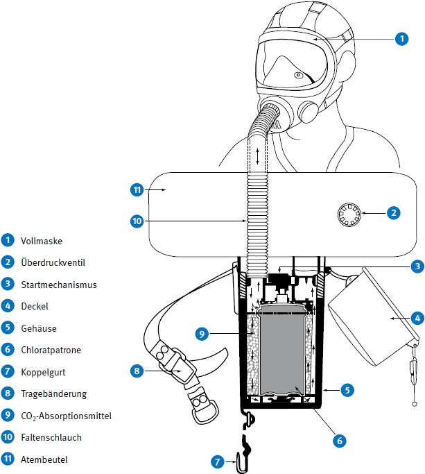
Abb. 49 Chemikalsauerstoff(NaClO3)-selbstretter